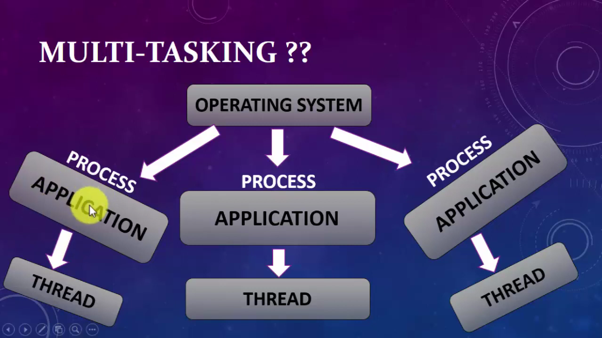
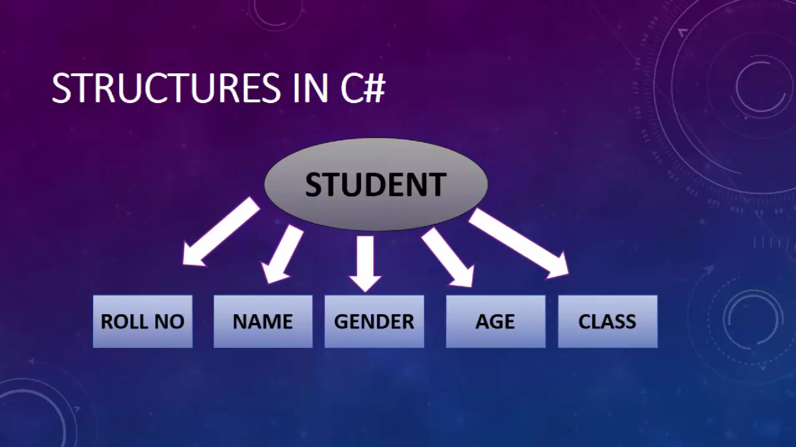

Microsoft introduced a new language called C# (pronounced C Sharp).
C# is designed to be a simple, modern, general-purpose, object-oriented programming language, borrowing key concepts from several other languages, most notably Java.
C# was developed by Anders Hejlsberg and his team during the development of .Net Framework
C# is a part of .NET Framework and currently in version 12.
We Can Use C# For Building Variety Of Applications.
WINDOWS APPLICATION: using console application or Winform Application.
MOBILE APPLICATIONS: for phones such as Nokia Lumia (built-in support) but we can use a third party tool or library called "XAMARIN" to create mobile applications for ANDROID and IOS as well.
WEB APPLICATON: using ASP.NET web forms or ASP.NET MVC.
GAMING APPLICATION: Unity.
C# with .Net
C# could theoretically be compiled to machine code, but in real life,it is always used in combination with the .NET framework. Therefore, applications written in C#, requires the .NET framework to be installed on the computer for running the application.
While the .NET framework makes it possible to use a wide rangeof languages, C# is sometimes referred to as THE .NET language, perhaps because it was designed together with the framework.
Language interoperability is the ability of code to interact with code that is written by using a different programming language.
WHAT IS .NET FRAMEWORK
.NET is a programming framework created by Microsoft that developers can use to create applications more easily.
A framework is just a bunch of code that the programmer can call without having to write it explicitly.
It provides a controlled programming environment where software can be developed, installed and executed on Windows-based operating systems.
It is basically a collection of libraries.
It is a programming platform that is used for developing Windows, Web-based, and mobile software.
It has a number Of pre-coded solutions that manage the execution of programs written specifically for the framework.
A programmer can develop applications using one of the languages supported by .NET.
Microsoft introduced C# as a new programming language address the problems posed by traditional languages.
MICROSOFT C# WAS DEVELOPED TO:
Create a very simple and yet powerful tool for building interoperable and robust applirations.
Create a complete object-oriented architecture.
Support powerful component-oriented development.
Allow access to many features previously available only in C++ while retaining the ease-of-use of a rapid application development tool such as Visual Basic.
Provide familiarity to programmers coming from C or C++ background.
Allow to write applications that target both desktop and mobile devices.
C# has features common to most object-oriented languages.
It has language-specific features, such as:
Type safety checking Generics Indexers
These features make the C# as a preferred language to create a wide variety of applications.
C# is a programming language designed for building a wide range of applications that run on the .NET Framework.
Common Language Runtime (CLR) In Dotnet Framework
The CLR :
Is the foundation of the .NET Framework.
Acts as an execution engine for the .NET Framework.
Manages the execution of programs and provides a suitable environment for programs to run.
Provides a multi-language environment.
The following figure shows a more detailed look at the working of the CLR:
Different codes(C#,Vb.Net,F# etc) ka apna compiler hota hai jo lastly code ko compile krke ek cil/msil file bnata hai jise clr jit ki help se native code me convert krta hai jo hmara computer smjhta hai.
When a code is executed for the first time;
The CIL (COMMON INTERMEDIATE LANGUAGE) code is converted to a code native to the operating system.
This is done at runtime by the Just-in-Time (JIT) compiler present in the CLR.
The CLR converts the CIL code to the machine language code.
Once this is done, the code can be directly executed by the CPU.
Namespace and Main method
WHAT IS NAMESPACE
A namespace is used to organize your code and is collection of classes, interfaces, structs, enums and delegates.
NOTE: IF U DON'T WANT TO USE NAMESPACE YOU CAN USE FULLY QUALIFIED NAME (FQN).
WHAT IS MAIN METHOD?
Main method is the entry point into your application.
Program : Create your first program to print Hello World in the console window.
HelloWorld.cs
using System;
class Program
{
public static void Main()
{
Console.WriteLine("Hello World");
}
}
READING AND WRITING TO THE CONSOLE IN C#
Program : Take firstname and lastname from user. Print it in console using both concatination and placeholder syntax.
Program.cs
using System;
class Program
{
public static void Main()
{
Console.WriteLine("Enter First Name.");
string FirstName=Console.ReadLine();
Console.WriteLine("Enter First Name.");
string LastName = Console.ReadLine();
Console.WriteLine("Hello "+FirstName+" "+LastName); //Concatination
Console.WriteLine("Hello {0} {1}.",FirstName,LastName); //Placeholder Syntax
}
}
Program : Take two numbers from user. Print the sum of the numbers and print it in console.
Program.cs
using System;
class Program
{
public static void Main()
{
Console.WriteLine("Enter First Number.");
int num1=int.Parse(Console.ReadLine());
Console.WriteLine("Enter Second Number.");
int num2 = int.Parse(Console.ReadLine());
Console.WriteLine("The sum of {0} and {1} is {2} .", num1, num2, num1 + num2);
}
}
BUILT IN DATA TYPES IN C#
INTERGRAL TYPE
SIGNED INTEGERS (WHICH TAKES NEGATIVE AND POSITIVE VALUES)
UNSIGNED INTEGERS (WHICH ONLY TAKES POSITIVE VALUES)
SBYTE BYTE SHORT USHORT INT UlNT LONG ULONG
Program : Print the minimum and maximum value of int,float and byte data type in console.
Program.cs
using System;
class Program
{
public static void Main()
{
Console.WriteLine("Minimum value of int is {0}", int.MinValue);
Console.WriteLine("Maximum value of int is {0}", int.MaxValue);
Console.WriteLine("Minimum value of float is {0}", float.MinValue);
Console.WriteLine("Maximum value of float is {0}", float.MaxValue);
Console.WriteLine("Minimum value of byte is {0}", byte.MinValue);
Console.WriteLine("Maximum value of byte is {0}", byte.MaxValue);
}
}
BOOLEAN DATA TYPE
Bool keyword is used for Boolean data type which only stores TRUE or FALSE.
Program : Compare two variables and store it in third boolean variable, finally print the result in console.
Program.cs
using System;
class Program
{
public static void Main()
{
Console.WriteLine("Enter First Number");
int num1 = int.Parse(Console.ReadLine());
Console.WriteLine("Enter Second Number");
int num2 = int.Parse(Console.ReadLine());
bool result=num1>num2;
if (result)
{
Console.WriteLine("First number is greater than second.");
}
else
{
Console.WriteLine("Second number is greater than first.");
}
}
}
Float, Double, Decimal DataTypes
Float, Double, Decimal
Precision : Point k pehle aur baad milake jo digits hain in total wo uska precision hoga.
For example : float ka precision 7 hai matlab hum usme 123.4567 store kr skte hain.
Float me "f" suffix important hai but decimal me "d" suffix optional hai.
Decimal k liye bhi "m" suffix compulsary hai.
STRING AND CHARACTER DATA TYPE
STRING AND CHAR
STRING STORES MULTIPLE CHARACTERS IN A SINGLE VARIABLE.
DOUBLE QUOTES WILL BE USED WITH STRING DATA TYPE. Example : string str = "ABC"
CHAR STORES SINGLE CHARACTER AT A TIME IN A VARIABLE.
SINGLE QUOTES WILL BE USED FOR CHAR DATA TYPE. Example : char ch = 'a'
ESCAPE SEQUENCE AND VERBATIM LITERAL
ESCAPE SEQUENCE : \ , \n , \t
VERBATIM LITERAL IS A STRING WITH AN @ SYMBOL.
VERBATIM LITERAL MAKE ESCAPE SEQUENCES TRANSLATE AS NORMAL PRINTABLE CHARACTERS TO ENHANCE READABILITY.
PRACTICAL EXAMPLE:
WITHOUT VERBATIM LITERAL: "C:\\Programs\\HelloWorld.cs" - Less readable
WITH VERBATIM LITERAL: @"C:\Programs\HelloWorld.cs" - More readable
Program :Create a program to show multiple example of escape sequences.
Program.cs
using System;
class Program
{
public static void Main()
{
string str1 = "\"Welcome to C#\"";
string str2 = "\'Welcome to C#\'";
string str3 = "\\Welcome to C#\\";
string str4 = "\tWelcome to C#";
string str5 = "One\nTwo\nThreee\n";
Program : Create a string to store a string value and iterate all its characters using foreach loop.
Program.cs
using System;
class Program
{
public static void Main()
{
string str = "Kumar";
foreach(char c in str)
{
Console.WriteLine(c);
}
}
}
DATA TYPES CONVERSION IN C# PROGRAMMING
Type Conversion
THERE ARE TWO TYPES OF CONVERSIONS IMPLICIT AND EXPLICIT CONVERSION.
IMPLICIT CONVERSION IS DONE BY THE COMPILER.
1. WHEN THERE IS NO LOSS OF INFORMATION IF THE CONVERSION IS DONE.
2. IF THERE IS NO POSSIBILITY OF THROWING EXCEPTION DURING THE CONVERSION.
EXAMPLE: CONVERTING AN INT TO A FLOAT WILL NOT LOOSE ANY DATA AND NO EXCEPTION WILL BE THROWN, HENCE AN IMPLICIT CONVERSION CAN BE DONE.
WHERE AS WHEN CONVERTING A FLOAT TO AN INT, WE LOOSE THE FRACTIONAL PART AND ALSO A POSSIBILITY OF OVERFLOW EXCEPTION. HENCE, IN THIS CASE AN EXPLICIT CONVERSION IS REQUIRED.
Three ways for explicit conversion : (int)12.5 , Convert.ToInt32(12.5), float.Parse(12.5);
Parse always takes a string , so when we take input from user it is the perfect to use Parse.
Program : Create a program to show the three ways of explicit conversion.
Program.cs
using System;
class Program
{
public static void Main()
{
float a = 12.5f;
int b = (int)a;
int c = Convert.ToInt32(a);
string d = "12.5";
float e = float.Parse(d);
Console.WriteLine(b);
Console.WriteLine(c);
Console.WriteLine(e);
}
}
CONSTANTS IN C#
Constant
A constant has a fixed value that remains unchanged throughout the program.
In C#, you can declare constants for all data types.
You have to initialize a constant at the time of its declaration.
Constants are declared for value types rather than for reference types.
To declare an identifier as a constant, the "const" keyword is used in the identifier declaration.
The compiler can identify constants at the time of compilation, because of the "const" keyword.
Program : Write a simple program to print the constant.
Program.cs
using System;
class Program
{
public const double PI = 3.14;
public static void Main()
{
const string Company = "XYZ";
Console.WriteLine(PI);
Console.WriteLine(Company);
}
}
STANDARD DATE AND TIME FORMAT SPEClFlERS IN C#
DATE AND TIME FORMAT SPECIFIERS
A date and time format specifier is a special character that enables you to display the date and time values in different formats.
Format Specifier
Name
d
Short date
D
Long date
f
Full date/time (short time)
F
Full date/time (long time)
g
General date/time (short time)
G
General date/time (long time)
m or M
Month day
t
Short Time
T
Long Time
y or Y
Year month pattern
ddd
Represents the abbreviated name of the day of the week.
dddd
Represents the full name of the day of the week.
FF
Represents the two digits of the seconds fraction
HH
Represents the hour from 00 to 23
MM
Represents the month as a number from 01 to 12
MMM
Represents the abbreviated name of the month
ss
Represents the seconds as a number from O to 59
Program : Create a program to show different useful methods of date time.
Program.cs
using System;
class Program
{
public const double PI = 3.14;
public static void Main()
{
DateTime dt = DateTime.Now;
Console.WriteLine("{0:d}", dt); // 11/28/2023
Console.WriteLine("{0:D}", dt); // Tuesday, November 28, 2023
Console.WriteLine("{0:f}", dt); // Tuesday, November 28, 2023 10:23 AM
Console.WriteLine("{0:F}", dt); // Tuesday, November 28, 2023 10:23:55 AM
Console.WriteLine("{0:g}", dt); // 11/28/2023 10:23 AM
Console.WriteLine("{0:d} {1:D}",dt,dt); // 11/28/2023 Tuesday, November 28, 2023
Console.WriteLine("{0:t}",dt); // 2:12 PM
Console.WriteLine("{0:T}", dt); // 2:12:47 PM
Console.WriteLine("{0:yyyy}", dt); // 2023
Console.WriteLine("{0:ddd}", dt); // Tue
Console.WriteLine("{0:dddd}", dt); // Tuesday
Console.WriteLine("{0:hh:mm:ss}",dt); //02:12:47
Console.WriteLine("{0:dd-MM-yyyy}",dt); // 28-11-2023
}
}
STATEMENTS, EXPRESSIONS AND OPERATORS IN C#
STATEMENTS
A C# program is a set of tasks that perform to achieve the overall functionality of the program.
To perform the tasks, programmers provide instructions. These instructions are called statements.
A C# statement can contain expressions that evaluates to a value.
Statements are referred to as logical grouping of variables,operators, and C# keywords that perform a specific task.
For example, the line whic initializes a variable by assigning it a value is a statement.
In C#, a statement ends with a semicolon.
A program contains multiple statements grouped in blocks. A block is a code segment enclosed in curly braces.
Statements are used to specify the input, the process, and the output tasks of a program. Statements can consist of:
Data types
Variables
Operators
Constants
Literals
Keywords
Escape sequence characters
Statements help you build a logical flow in the program. With the help of statements, you can:
Initialize variables and objects
Take the input
Call a method of a class
Display the output
TYPES OF STATEMENTS
Similar to statements in C and C++, the C# statements are classified into seven categories:
Selection Statements
Iteration Statements
Jump Statements
Exception Handling Statements
EXPRESSIONS
Expressions are used to manipulate data. Like in mathematics, expressions in programming languages, including C#, are constructed from the operands and operators. Example: 2 + 2
An expression statement in C# ends with a semicolon (;).
The following code demonstrates an example for expressions: simplelnterest = principal * time * rate / 100;
Operators
Expressions in C# comprise one or more operators that performs some operations on variables.
An operation is an action performed on single or multiple values stored in variables in order to modify them or to generate a new value with the help of minimum one symbol and a value.
The symbol is called an operator and it determines the type of action to be performed on the value.
An operand might be a complex expression. For example, (X * Y) + (X Y) is a complex expression, where the + operator is used to join two operands.
The value on which the operation is to be performed is called an operand.
Operators are used to simplify expressions.
In C#, there is a predefined set of operators used to perform various types of operations.
These are classified into seven categories based on the action they perform on values:
Arithmetic Operators
Relational Operators
Logical Operators
Bitwise Operators
Conditional Operators
Increment and Decrement Operators
Assignment Operators
CLASSIFICATION OF OPERATORS
Operators are classify into 3 categories:
UNARY OPERATORS - jinhe ek operand ki jarurat hoti hai. eg: ++i
TERNARY OPERATORS - jo 3 operands k sath kaam kre. eg: condition ? consequent : alternative
Arithmetic Operators in C#
Arithmetic Operators
Arithmetic operators are binary operators because they work with two operands, with the operator being placed in between the operands.
These operators allow you to perform computations on numeric or string data.
+ , - , / , * , %
Program : Create a program to show the common usecase of arithmetic operators.
Program.cs
using System;
class Program
{
public static void Main()
{
int a = 10, b = 5, c, d, e, f, g;
c = a + b;
d = a - b;
e = a * b;
f = a / b;
g = a % b;
Console.WriteLine("Addition of {0} and {1} is : {2}",a,b,c);
Console.WriteLine("Substraction of {0} and {1} is : {2}", a, b, d);
Console.WriteLine("Multiplication of {0} and {1} is : {2}", a, b, e);
Console.WriteLine("Division of {0} and {1} is : {2}", a , b, f);
Console.WriteLine("Modulous of {0} and {1} is : {2}", a, b, g);
}
}
RELATIONAL OR COMPARISON OPERATORS
Relational Operators
Relational operators make a comparison between two operands and return a boolean value, true or false.
==
!=
>
<
>=
<=
Program :Create a simple program to show the return value of a relational operator.
Program.cs
using System;
class Program
{
public static void Main()
{
int a = 10, b = 20;
bool c = a <= b;
Console.WriteLine(c);
if (c) Console.WriteLine("a is less than or equal to b");
else Console.WriteLine("a is greater than b");
}
}
LOGICAL OR CONDITIONAL OPERATORS
Logical Operators
Logical operators perform boolean logical operations on both the operands. They return a boolean value based on the logical operator used.
There are two types of conditional operators.
CONDITIONAL AND (&&)
CONDITIONAL OR (||).
Program : Write a simple program to show the usecase of conditional operator.
Program.cs
using System;
class Program
{
public static void Main()
{
int a = 10, b = 20;
bool c = a < b && b > a ;
Console.WriteLine(c);
if (c) Console.WriteLine("a is less than b");
else Console.WriteLine("a is greater than b");
}
}
ASSIGNMENT OPERATORS IN C#
Assignment Operators
Assignment operators are used to assign the value of the right side operand to the operand on the left side using the equal to operator (=).
The assignment operators are divided into two categories in C#. These are as follows:
Simple assignment operators: The simple assignment operator is which is used to assign a value or result of an expression to a variable.
Compound assignment operators: The compound assignment operators are formed by combining the simple assignment operator with the arithmetic operators.
Program : Write a simple program to show the usecase of compound assignment operator.
Program.cs
using System;
class Program
{
public static void Main()
{
int a = 10;
a+=5; // a = a + 5
Console.WriteLine(a);
}
}
INCREMENT AND DECREMENT OPERATORS
Increment & Decrement Operators
Two of the most common calculations performed in programming are increasing and decreasing the value of the variable by 1.
In C#, the increment operator (++) is used to increase the value by 1 while the decrement operator (--) is used to decrease the value by 1.
If the operator is placed before the operand, the expression is called pre-increment or pre-decrement.
If the operator is placed after the operand, the expression is called post-increment or post-decrement.
Program :Write a simple example to show the usecase of pre and post increment operator.
Program.cs
using System;
class Program
{
public static void Main()
{
int a = 5;
//Post Increment : First the value is incremented and post it is assigned.
Console.WriteLine(a++); //5
Console.WriteLine(a); //6
Console.WriteLine(++a); //7
Console.WriteLine(a); //7
}
}
TERNARY OR CONDITIONAL OPERATORS
Ternary Operators
C# includes a special type of decision making operator ? : called the ternary operator.
Syntax: Boolean Expression ? First Statement : Second Statement
Program : Create a simple program to show the usecase of ternary operator.
Program.cs
using System;
class Program
{
public static void Main()
{
int a = 5, b = 10;
string c = a > b ? "a is greater" : "a is smaller";
Console.WriteLine(c);
Console.WriteLine("Please enter your age?");
int age = int.Parse(Console.ReadLine());
string result=age>=18?"You are Eligible to vote.": "You are Not Eligible to vote.";
Console.WriteLine(result);
}
}
PRECEDENCE OF OPERATORS
Precedence of Operators
Operators in C# have certain associated priority levels.
The C# compiler executes operators in the sequence defined by the priority level of the operators.
EXAMPLE: 8/2-3+2*2
Brackets have the highest precedence.
Precedence level : / * , + -
/ and * ka precedence same hai to hum left to right operation krenge.
Program : Create a program to show the precedence of operators.
Program.cs
using System;
class Program
{
public static void Main()
{
int a = 8 / 2 - 3 + 2 * 2;
// 4 - 3 + 2 * 2
// 4 - 3 + 4
// 1 + 4
// 5
Console.WriteLine(a);
}
}
SELECTION STATEMENTS IN C#
SELECTION CONSTRUCT OR STATEMENT
Is a programming construct supported by C# that controls the flow of a program.
Executes a particular block of statements based on a boolean condition, which is an expression returning true or false.
Is referred to as a decision-making construct.
Allow you to take logical decisions about executing different blocks of a program to achieve the required logical output.
C# supports the following decision-making constructs:
if...else
if...else...if
Nested if
switch...case
Nested Switch Case
THE IF STATEMENT
The if statement allows you to execute a block of statements after evaluating the specified logical condition.
The if statement starts with the if keyword and is followed by the condition.
If the condition evaluates to true, the block of statements following the if statement is executed.
If the condition evaluates to false, the block of statements following the if statement is ignored and the statement after the block is executed.
Program : Take username and password from user. If username and password is correct print "Login Successful" else "Invalid Username/Password".
Program.cs
using System;
class Program
{
public static void Main()
{
Console.WriteLine("Enter Username ");
string username=Console.ReadLine();
Console.WriteLine("Enter Password ");
string password=Console.ReadLine();
if(username=="Kumar" && password == "test123")
{
Console.WriteLine("Login Successfull");
}
else
{
Console.WriteLine("Invalid Username/Password");
}
}
}
THE IF-ELSE-IF STATEMENT
If..else..if Statement
The if...else...if construct allows you to check multiple conditions to execute a different block of code for each condition.
It is also referred to as if-else-if ladder.
The construct starts with the if statement followed by multiple else if statements followed by an optional else block.
The conditions specified in the if...else...if construct are evaluated sequentially.
The execution starts from the if statement. If a condition evaluates to false, the condition specified in the following else...if statement is evaluated.
Program : Use if-else-if statement to print the grade according to the marks provided by the user.
Program.cs
using System;
class Program
{
public static void Main()
{
Console.WriteLine("Enter you percentage? ");
int percentage=int.Parse(Console.ReadLine());
if(percentage >= 90)
{
Console.WriteLine("Your grade is : Grade A-1");
}
else if (percentage >= 80)
{
Console.WriteLine("Your grade is : Grade A");
}
else if (percentage >= 70)
{
Console.WriteLine("Your grade is : Grade B");
}
else if (percentage >= 60)
{
Console.WriteLine("Your grade is : Grade C");
}
else if (percentage >= 50)
{
Console.WriteLine("Your grade is : Grade D");
}
else if (percentage >= 33)
{
Console.WriteLine("Your grade is : Grade E");
}
else
{
Console.WriteLine("Fail");
}
}
}
NESTED IF CONSTRUCT
Nested If
The nested if construct consists of multiple if statements.
The nested if construct starts with the if statement, which is called the outer if statement, and contains multiple if statements, which are called inner if statements.
In the nested if construct, the outer if condition controls the execution of the inner if statements. The compiler executes the inner if statements only if the condition in the outer if statement is true.
In addition, each inner if statement is executed only if the condition in its previous inner if statement is true.
Program : Create a program to show a basic example of nested if construct.
Program.cs
using System;
class Program
{
public static void Main()
{
Console.WriteLine("Enter a number?");
int num=int.Parse(Console.ReadLine());
if(num > 5)
{
if (num == 10)
{
Console.WriteLine("Number is 10.");
}
else
{
Console.WriteLine("Number is not 10.");
}
}
else
{
if(num == 5) {
Console.WriteLine("Number is 5.");
}
else
{
Console.WriteLine("Number is not 5.");
}
}
}
}
Program : Create a program to take user email if it valid then only ask for password else print Invalid email using nested if.
Program.cs
using System;
class Program
{
public static void Main()
{
Console.WriteLine("Enter your Email");
string email=Console.ReadLine();
if(email == "admin@test.com")
{
Console.WriteLine("Plaese enter your password.");
string password=Console.ReadLine();
if (password == "test123")
{
Console.WriteLine("Login Successful.");
}
else
{
Console.WriteLine("Wrong Password.");
}
}
else
{
Console.WriteLine("Email does not exist.");
}
}
}
SWITCH...CASE CONSTRUCT
Switch Case
A program is difficult to comprehend when there are too many if statements representing multiple selection constructs.
To avoid using multiple if statements, in certain cases, the switch...case approach can be used as an alternative.
The switch...case statement is used when a variable needs to be compared against different values.
In C#, the flow of execution from one case statement is not allowed to continue to the next case statement and is referred to as the 'no-fall-through' rule of C#.
Program : Take Week Day in number from the user and print the week day of that number using switch case.
Program.cs
using System;
class Program
{
public static void Main()
{
Console.WriteLine("Enter Week Day Number");
int week_day = int.Parse(Console.ReadLine());
switch (week_day)
{
case 0:
Console.WriteLine("Monday");
break;
case 2:
Console.WriteLine("Tuesday");
break;
case 3:
Console.WriteLine("Wednesday");
break;
case 4:
Console.WriteLine("Thrusday");
break;
case 5:
Console.WriteLine("Friday");
break;
case 6:
Console.WriteLine("Saturday");
break;
case 7:
Console.WriteLine("Sunday");
break;
default:
Console.WriteLine("Invalid Week Number.");
break;
}
}
}
Program : Create a program using switch statement to print "You are not eligible to vote" is case of age supplied is 15, 16 and 17. In case of 18,19,20 print "You are eligible to vote."
Program.cs
using System;
class Program
{
public static void Main()
{
Console.WriteLine("Enter You Age?");
int age = int.Parse(Console.ReadLine());
switch (age)
{
case 15:
case 16:
case 17:
Console.WriteLine("You are not eligible to vote");
break;
case 18:
case 19:
case 20:
Console.WriteLine("You are eligible to vote.");
break;
default:
Console.WriteLine("Invalid Age");
break;
}
}
}
NESTED-SWITCH...CASE CONSTRUCT
Nested Switch
C# allows the switch...case construct to be nested. That is, a case block of a switch...case construct can contain another switch...case construct.
Also, the case constants of the inner switch...case construct can have values that are identical to the case constants of the outer construct.
Program : Create a pizza app to select pizza using nested switch.
Program.cs
using System;
class Program
{
public static void Main()
{
Console.WriteLine("Enter Your Pizza?");
string pizza = Console.ReadLine();
switch (pizza)
{
case "supreme":
Console.WriteLine("You have selected Supreme Pizza.");
break;
case "cheese":
Console.WriteLine("You have selected Cheese Pizza.");
break;
case "vegetable":
Console.WriteLine("Enter your Vegitable : ");
string veg = Console.ReadLine();
switch (veg)
{
case "olive":
Console.WriteLine("You have selected Olive in your Pizza.");
break;
case "onion":
Console.WriteLine("You have selected Onion in your Pizza.");
break;
case "garlic":
Console.WriteLine("You have selected Garlic in your Pizza.");
break;
case "mushroom":
Console.WriteLine("You have selected Mushroom in your Pizza.");
break;
default :
Console.WriteLine("Vegitable not available.");
break;
}
break;
default:
Console.WriteLine("Pizza not available.");
break;
}
}
}
Marksheet Console Program
Program : Create a marksheet for student using different statements.
Program.cs
using System;
class Program
{
public static void Main()
{
Console.WriteLine("Enter Your Name?");
string name = Console.ReadLine();
Console.WriteLine("Enter Your Class?");
int standard = int.Parse(Console.ReadLine());
Console.WriteLine("Enter Your Roll No. ?");
int roll=int.Parse(Console.ReadLine());
Console.WriteLine("Enter Your Hindi Marks");
int hindi=int.Parse(Console.ReadLine());
Console.WriteLine("Enter Your English Marks");
int english = int.Parse(Console.ReadLine());
Console.WriteLine("Enter Your Math Marks");
int math = int.Parse(Console.ReadLine());
Console.WriteLine("Enter Your Science Marks");
int science = int.Parse(Console.ReadLine());
Console.WriteLine("Enter Your Social Science Marks");
int sst = int.Parse(Console.ReadLine());
int obt=hindi+english+math+science+sst;
int per = obt * 100 / 500;
Console.WriteLine("-----------Marksheet------------");
Console.WriteLine("Your Name is : {0}",name);
Console.WriteLine("Your Roll No. is : {0}", roll);
Console.WriteLine("Your Class is : {0}", standard);
Console.WriteLine("Your Obtained Marks is : {0}", obt);
Console.WriteLine("Your Percentage is : {0}", per);
//if else if for grade
if (per >= 80)
{
Console.WriteLine("Grade : A+");
}
else if (per >= 70)
{
Console.WriteLine("Grade : A");
}
else if (per >= 60)
{
Console.WriteLine("Grade : B");
}
else if (per >= 60)
{
Console.WriteLine("Grade : C");
}
else if (per >= 50)
{
Console.WriteLine("Grade : D");
}
else if (per >= 33)
{
Console.WriteLine("Grade : E");
}
else
{
Console.WriteLine("Fail.");
}
//if else if for remarks
if (per >= 80)
{
Console.WriteLine("Remarks : Excellent");
}
else if (per >= 70)
{
Console.WriteLine("Remarks : Very Good");
}
else if (per >= 60)
{
Console.WriteLine("Remarks : Good");
}
else if (per >= 60)
{
Console.WriteLine("Remarks : Fair");
}
else if (per >= 50)
{
Console.WriteLine("Remarks : Need lots of improvement.");
}
else if (per >= 33)
{
Console.WriteLine("Remarks : Poor");
}
else
{
Console.WriteLine("Remarks : Very Poor");
}
int supply = 0;
if (hindi < 33) { supply++; Console.WriteLine("You have supply in Hindi."); }
if (english < 33) { supply++; Console.WriteLine("You have supply in English."); }
if (math < 33) { supply++; Console.WriteLine("You have supply in Math."); }
if (science < 33) { supply++; Console.WriteLine("You have supply in Science."); }
if (sst < 33) { supply++; Console.WriteLine("You have supply in Social Science."); }
Console.WriteLine("You are failed in {0} subject.",supply);
}
}
LOOP CONSTRUCTS OR STATEMENTS IN C#
Loop construct
Loops allow you to execute a single statement or a block of statements repetitively.
The most common uses of loops include displaying a series of numbers and taking repetitive input.
In software programming, a loop construct contains a condition that helps the compiler identify the number of times a specific block will be executed.
If the condition is not specified, the loop continues infinitely and is termed as an infinite loop.
The loop constructs are also referred to as iteration statements.
C# supports four types of loop constructs such as: 1. The for loop 2. The while loop 3. The do..while loop 4. The foreach loop
The For Loop
The for statement is similar to the while statement in function.
The statements within the body of the loop are executed as long as the condition is true.
Here too, the condition is checked before the statements are executed.
There are 3 things in FOR LOOP: Initialization Condition Increment/decrement
Program :Take a number from user and print the table using for loop.
Program.cs
using System;
class Program
{
public static void Main()
{
Console.WriteLine("Please Enter a number for Table.");
int num = int.Parse(Console.ReadLine());
for(int i=1;i<=10; i++) {
Console.WriteLine("{0} X {1} = {2}",num,i,num*i);
}
}
}
THE WHILE LOOP
While Loop
The while loop is used to execute a block of code repetitively as long as the condition of the loop remains true.
The while loop consists of the while statement, which begins with the while keyword followed by a boolean condition.
If the condition evaluates to true, the block of statements after the while statement is executed.
After each iteration, the control is transferred back to the while statement and the condition is checked again for another round of execution.
When the condition is evaluated to false, the block of statements following the while statement is ignored and the statement appearing after the block is executed by the compiler.
Program : Take a number from user and print the table using while loop.
Program.cs
using System;
class Program
{
public static void Main()
{
Console.WriteLine("Please Enter a number for Table.");
int num = int.Parse(Console.ReadLine());
int i = 1;
while (i <=10)
{
Console.WriteLine("{0} X {1} = {2}", num, i, num * i);
i++;
}
}
}
THE DO-WHILE LOOP
Do While Loop
The do-while loop is similar to the while loop; however, it is always executed at least once without the condition being checked.
The loop starts with the do keyword and is followed by a block of executable statements.
The while statement along with the condition appears at the end of this block.
The statements in the do-while loop are executed as long as the specified condition remains true.
When the condition evaluates to false, the block of statements after the do keyword are ignored and the immediate statement after the while statement is executed.
Program : Take a number from user and print the table using do while loop.
Program.cs
using System;
class Program
{
public static void Main()
{
Console.WriteLine("Please Enter a number for Table.");
int num = int.Parse(Console.ReadLine());
int i = 1;
do
{
Console.WriteLine("{0} X {1} = {2}", num, i, num * i);
i++;
} while (i <= 10);
}
}
DIFFERENCE BETWEEN FOR LOOP AND WHILE LOOP IN C#
For Vs While Loop
For loop k andar i declare kiye usko bahar use nhi kr skte jabki while me declaration bahar hoti hai to use kbi bhi use kr skte hai.
For loop me bhi hum i ko bahar declare kr skte hai aur aage kbhi bhi use kr skte hain.
Genearally jab hme pta ho ki loop kitni baar execute krega to use krenge for loop nhi to while loop.
Program : Create a for loop , declare a initialize its value outside the for loop and use that variable outside the for loop to print a statement.
Program.cs
using System;
class Program
{
public static void Main()
{
Console.WriteLine("Please Enter a number.");
int num = int.Parse(Console.ReadLine());
for(;num <= 10; num++)
{
Console.WriteLine("Inside for loop.");
}
Console.WriteLine("Outside the for loop and the value of the number supplied is now {0}", num);
}
}
NESTED FOR LOOP
Nested For Loop
The nested for loop consists of multiple for statements.
When one for loop is enclosed inside another for loop, the loops are said to be nested.
The for loop that encloses the other for loop is referred to as the outer for loop whereas the enclosed for loop is referred to as the inner for loop.
The outer for loop determines the number of times the inner for loop will be invoked.
Program : Create two loops one inside another and print upto 5 iterations to ilustrate the concept of nested for loop.
Program.cs
using System;
class Program
{
public static void Main()
{
for(int i=1; i<=5;i++)
{
Console.WriteLine("Outer For Loop.");
for(int j=1; j <= i; j++)
{
Console.WriteLine("\t Inner For Loop.");
}
}
}
}
JUMP STATEMENTS IN C#
Jump Statements
Jump statements are used to transfer control from one point in a program to another.
There will be situations where you need to exit out of a loop prematurely and continue with the program.
In such cases, jump statements are used. Jump statement unconditionally transfer control of a program to a different location.
The location to which a jump statement transfers control is called the target of the jump statement.
C# supports four types of jump statements. These are as follows: break continue goto return
Break Statement
The break statement is used in the selection and loop constructs.
It is most widely used in the switch...case construct and in the for and while loops.
The break statement is denoted by the break keyword. In the switch...case construct, it is used to terminate the execution of the construct.
In loops, it is used to exit the loop without testing the loop condition.
In this case, the control passes to the next statement following the loop.
Continue Statement
The continue statement is most widely used in the loop constructs and is denoted by the continue keyword.
The continue statement is used to end the current iteration of the loop and transfer the program control back to the beginning of the loop.
The statements of the loop following the continue statement are ignored in the current iteration.
Goto Statement
The goto statement allows you to directly execute a labeled statement or a labeled block of statements.
A labeled block or a labeled statement starts with a label. A label is an identifier ending with a colon.
A single labeled block can be referred by more than one goto statements.
The goto statement is denoted by the goto keyword
Program : Create a for loop for 10 iterations, stop it at 5th iteration using break statement.
Program.cs
using System;
class Program
{
public static void Main()
{
for(int i=1; i<=10;i++)
{
if (i == 5) break;
Console.WriteLine("Inside Loop...Iteration {0}",i);
}
Console.WriteLine("Outside Loop...Loop terminated.");
}
}
Program : Create a for loop for 10 iterations, skip it at 5th iteration using continue statement.
Program.cs
using System;
class Program
{
public static void Main()
{
for(int i=1; i<=10;i++)
{
if (i == 5) continue;
Console.WriteLine("Inside Loop...Iteration {0}",i);
}
Console.WriteLine("Outside Loop...Loop terminated.");
}
}
Program : Create a program to print even numbers using continue statement.
Program.cs
using System;
class Program
{
public static void Main()
{
for(int i=1; i<=10;i++)
{
if (i%2 == 1) continue;
Console.WriteLine("Number is : {0}",i);
}
}
}
Program : Create a for loop to print the iteration but at 5th iteration it will jump to a code outside the loop using goto statement.
Program.cs
using System;
class Program
{
public static void Main()
{
for(int i=1; i<=10;i++)
{
if (i == 5) goto stop;
Console.WriteLine("Iteration : {0}",i);
}
Console.WriteLine("Loop terminated.");
stop: Console.WriteLine("Program Exited.");
}
}
HOW TO RESTART C# PROGRAM WITH USER INPUT
Program : Ask the user to restart the program using do while loop.
Program.cs
using System;
class Program
{
public static void Main()
{
string repeat;
do
{
Console.WriteLine("Enter First Number?");
int num1 = int.Parse(Console.ReadLine());
Console.WriteLine("Enter Second Number?");
int num2 = int.Parse(Console.ReadLine());
Console.WriteLine("The sum of {0} and {1} is : {2}",num1,num2,num1+num2);
Console.WriteLine("Do you want to continue?? yes/no ?");
repeat = Console.ReadLine().ToLower();
} while (repeat == "yes");
Console.WriteLine("Thank you...!");
}
}
Program : Ask the user to restart the program using while loop.
Program.cs
using System;
class Program
{
public static void Main()
{
while (true)
{
Console.WriteLine("Enter First Number?");
int num1 = int.Parse(Console.ReadLine());
Console.WriteLine("Enter Second Number?");
int num2 = int.Parse(Console.ReadLine());
Console.WriteLine("The sum of {0} and {1} is : {2}",num1,num2,num1+num2);
Console.WriteLine("Do you want to continue?? yes/no ?");
string repeat = Console.ReadLine().ToLower();
if(repeat == "yes") continue;
else break;
};
Console.WriteLine("Thank you...!");
}
}
Arrays in C#
INTRODUCTION TO ARRAYS
An array is a collection of elements of a single data type stored in adjacent memory locations.
An array: Is a collection of related values placed in contiguous memory locations and these values are referenced using a common array name.
It Simplifies the task of maintaining these values.
An array always stores values of a single data type.
Each value is referred to as an element.
These elements are accessed using subscripts or index numbers that determine the position of the element in the array list.
C# supports zero-based index values in an array.
This means that the first array element has an index number zero while the last element has an index number n-1, where n stands for the total number of elements in the array.
This arrangement of storing values helps in efficient storage of data, easy sorting of data, and easy tracking of length.
Example int[] my_array=new int[3]; my_array[0]=11; my_array[1]=22; my_array[2]=33;
Size is decided by the value supplied. string[] my_array1=new string[] {"Kumar","Saurav","Arpit"}; string[] my_array2={"Kumar","Saurav","Arpit"};
DECLARING ARRAYS
Arrays are reference type variables whose creation involves two steps:
Declaration:
An array declaration specifies the type of data that it can hold and an identifier.
This identifier is basically an array name and is used with a subscript to retrieve or set the data value at that location.
Memory allocation:
Declaring an array does not allocate memory to the array.
INITIALIZING ARRAYS
An array can be:
Created using the new keyword and then initialized.
Initialized at the time of declaration itself, in which case the new keyword is not used.
Creating and initializing an array with the new keyword involves specifying the size of an array.
The number of elements stored in an array depends upon the specified size.
The new keyword allocates memory to the array and values can then be assigned to the array.
Program : Create a program to show the three ways to declare an array.
Program.cs
using System;
class Program
{
public static void Main()
{
int[] my_array = new int[3];
my_array[0] = 11;
my_array[1] = 22;
my_array[2] = 33;
string[] my_array1 = new string[] { "Kumar", "Saurav", "Arpit" };
string[] my_array2 = { "Kumar", "Saurav", "Adil" };
foreach(int i in my_array)
{
Console.Write(i+" ");
}
Console.WriteLine("\n----------------------");
foreach (string i in my_array1)
{
Console.Write(i + " ");
}
Console.WriteLine("\n----------------------");
foreach (string i in my_array2)
{
Console.Write(i + " ");
}
}
}
Arrays with foreach Loop
USING THE FOREACH LOOP FOR ARRAYS
The foreach loop: In C# is an extension of the for loop.
It is used to perform specific actions on large data collections and can even be used on arrays.
Reads every element in the specified array.
Allows you to execute a block of code for each element in the array.
It is particularly useful for reference types, such as strings.
Program : Create an array to store string values and print it with both for and foreach loop.
Program.cs
using System;
class Program
{
public static void Main()
{
string[] my_array = { "One", "Two", "Three", "Four","Five" };
foreach(string str in my_array)
{
Console.Write(str+" ");
}
Console.WriteLine("\n-----------------");
for(int i = 0; i < my_array.Length; i++)
{
Console.Write(my_array[i]+" ");
}
}
}
TYPES OF ARRAYS IN C#
Types of Arrays
Based on how arrays store elements, arrays can be categorized into following two types:
Single-dimensional Arrays
Multi-dimensional Arrays
Single-dimensional Arrays
Elements of a single-dimensional array stored in a single row in allocated memory.
Declaration/initialization same as standard declaration/initialization of arrays.
Elements indexed from O to (n-1), where n is the total number of elements in the array.
Multi-dimensional Arrays
A multi-dimensional array allows you to store combination of values of a single type in two or more dimensions.
The dimensions of the array are represented as rows and columns similar to the rows and columns of a Microsoft Excel sheet.
It is also called array of arrays.
Following are the two types of multi-dimensional arrays:
Rectangular Array
Jagged Array
Rectangular Array
Is a multi-dimensional array where all the specified dimensions have constant values.
Will always have the same number of columns for each row.
There are 3 ways to initialize multidimensional array in C# while declaration.
int[,] arr = new int[3,3] = { { 1, 2, 3}, {4, 5, 6}, {7, 8, 9 }};
int[,] arr = new int[,]{{ 1, 2, 3}, {4, 5, 6}, {7, 8, 9 }}; //We can omit the array size.
int[,] arr={{1, 2, 3}, {4, 5, 6}, {7, 8, 9 }};// We can omit the new operator also.
Program : Create a multi-dimensional array of size 3 by 4. Print the elements of this rectangular array in tabular form.
Program.cs
using System;
class Program
{
public static void Main()
{
int[,] md_array = new int[3, 4]
{
{10,20,30,40 },
{11,22,33,44 },
{12,24,36,48 }
};
Console.WriteLine(md_array[1,3]); //44
Console.WriteLine(md_array.GetLength(0)); //3
Console.WriteLine(md_array.GetLength(1)); //4
Console.WriteLine(md_array.Rank); //2
for(int i = 0; i < md_array.GetLength(0); i++)
{
for(int j = 0; j < md_array.GetLength(1); j++)
{
Console.Write(md_array[i, j]+" ");
}
Console.WriteLine();
}
foreach(int i in md_array)
{
Console.Write(i+" ");
}
}
}
Jagged Array in C#
Jagged Array
Is a multidimensional array where one of the specified dimensions can have varying sizes.
Can have unequal number of columns for each row.
Program : Create a jagged array of 3 rows and multiple columns. Print it using for and foreach loop.
Program.cs
using System;
class Program
{
public static void Main()
{
int[][] my_array1 = new int[3][];
my_array1[0] = new[] { 11, 22, 33, 44, 55, 66, 77 };
my_array1[1] = new[] { 10, 12, 14 };
my_array1[2] = new[] { 12, 24, 36, 48 };
for (int i = 0; i < my_array1.GetLength(0); i++)
{
for (int j = 0; j < my_array1[i].Length; j++)
{
Console.Write(my_array1[i][j] + " ");
}
Console.WriteLine();
}
foreach (int[] items in my_array1)
{
foreach(int item in items)
{
Console.Write(item+" ");
}
Console.WriteLine();
}
}
}
INITIALIZING ARRAY WITH USER INPUT IN C#
Program : Create a program to enter number of data and the data to be stored by the user and display the data one by one in a line as output.
Program.cs
using System;
class Program
{
public static void Main()
{
Console.WriteLine("How many numbers of data you want to store?");
int numbers=int.Parse(Console.ReadLine());
string[] data = new string[numbers];
for(int i = 0; i < data.Length; i++)
{
Console.WriteLine("Enter {0} data : ", i + 1);
data[i] = Console.ReadLine();
}
Console.WriteLine("---------Your Data----------");
foreach (string d in data)
{
Console.Write(d+" ");
}
}
}
METHODS OR FUNCTIONS IN C#
METHODS OR FUNCTIONS
A method is a group of statements that together perform a task.
Methods are functions declared in a class and may be used to perform operations on class variables.
They are blocks of code that can take parameters and may or may not return a value.
It is used to perform specific task.
Methods are reusable.
Every C# program has at least one class with a method named Main.
There are basically two types of methods in C# ie. Static and Instance method.
Conventions to be followed for naming methods
The following syntax is used to create a method:
Cannot be a C# keyword, cannot contain spaces, and cannot begin with a digit Can begin with a letter, underscore, or the "@" character
Some examples of valid method names are: Add(), Sum_Add(), and @Add().
DEFINING METHODS IN C#
The syntax for defining a method in C# is as follows <Access Specifier> <Return Type> <Method Name>(Parameter List)
{
Method Body
}
INVOKING METHODS
To use a method, you need to
Define the method
Call the method
A method can be invoked in a class by creating an object of the class where the object name is followed by a period (.) and the name of the method followed by parentheses.
In C#, a method is always invoked from another method.
This is referred to as the calling method and the invoked method is referred to as the called method
A method invocation or call is stored in the stack in memory.
Method Parameters and Arguments
Parameters: The variables included in a method definition are called parameters.
Which may have zero or more parameters, enclosed in parentheses and separated by commas.
If the method takes no parameters, it is indicated by empty parentheses.
Arguments: When the method is called, the data that you send into the Arguments for method's parameters are called arguments.
According to parameters there are 2 types of methods.
A method in a C# program can accept multiple arguments that are passed based on the position of the parameters in the method signature.
A method caller can explicitly name one or more arguments being passed to the method instead of passing the arguments based on their position.
An argument passed by its name instead of its position is called a named argument.
While passing named arguments, the order of the arguments declared in the method does not matter.
Named arguments are beneficial because you do not have to remember the exact order of parameters in the parameter list of methods.
RETURN KEYWORD IN C#
The return statement is used to return value.
When a program calls a function, the program control is transferred to the called function.
ADVANTAGES OF USING THE METHODS
There are many advantages of using methods. Some of them are listed below:
It makes the program well structured.
Methods enhance the readability of the code.
It provides an effective way for the user to reuse the existing code.
It optimizes the execution time and memory space.
Program : Create a program to show the .calling of static and instance method. Also create a parameterised method where provide a default value if the user do not specify any value.
Program.cs
using System;
class Program
{
//Declaring Methods
//Instance Method
public void Show()
{
Console.WriteLine("Instance Method.");
}
public static void ShowOne()
{
Console.WriteLine("Static Method.");
}
public void Greeting(string user="User")
{
Console.WriteLine("Welcome {0}",user);
}
public static void Main()
{
//Calling Method
Program p1=new Program();
p1.Show();
Program.ShowOne();
p1.Greeting();
p1.Greeting("Kumar");
}
}
Program : Create a program to take user name and age and print it back but the function is called using named agrument.
Program.cs
using System;
class Program
{
public void PrintNameAge(string name,int age)
{
Console.WriteLine("Your name is {0} and you are {1} years old.",name,age);
}
public static void Main()
{
Program p1=new Program();
p1.PrintNameAge(age: 26, name: "Kumar"); //Named Argument
}
}
Calculator Application
Program : Create a calculator application to perform Addition , Subtration, Multiplication, Division using decision making statement and conditional operators.
Program.cs
using System;
class Program
{
public static void Addition(int a,int b)
{
Console.WriteLine("The Sum of {0} and {1} is : {2}",a,b,a+b);
}
public static void Subtraction(int a, int b)
{
Console.WriteLine("The Difference of {0} and {1} is : {2}", a, b, a - b);
}
public static void Multiplication(int a, int b)
{
Console.WriteLine("The Product of {0} and {1} is : {2}", a, b, a * b);
}
public static void Division(int a, int b)
{
Console.WriteLine("The Division of {0} and {1} is : {2}", a, b, a / b);
}
static void Main()
{
Console.WriteLine("Enter first number");
int num1=int.Parse(Console.ReadLine());
Console.WriteLine("Enter second number");
int num2 = int.Parse(Console.ReadLine());
Console.WriteLine("Enter Operation + , - , * , /");
string operation = Console.ReadLine();
//if (operation.Equals("+")) Program.Addition(num1, num2);
//else if (operation.Equals("-")) Program.Subtraction(num1, num2);
//else if (operation.Equals("*")) Program.Multiplication(num1, num2);
//else if (operation.Equals("/")) Program.Division(num1, num2);
switch (operation)
{
case "+":
Program.Addition(num1, num2);
break;
case "-":
Program.Subtraction(num1, num2);
break;
case "*":
Program.Multiplication(num1, num2);
break;
case "/":
Program.Division(num1, num2);
break;
default:
Console.WriteLine("Invalid Input");
break;
}
}
}
VALUE TYPE VS REFERENCE TYPE IN C#
Value Type and Reference Type
Stack me har baar nayi object ban rhi to ektime k baad exception milegi stack overflow.
Program : Create a struct Employee containing properties like Age. Create three objects of Employee and copy first to both second and third. Change the Age of first object and show that it will not change the other two objects Age value.
Program.cs
using System;
struct Employee
{
public int Age { get; set; }
}
class Program
{
static void Main()
{
Employee e = new Employee();
e.Age = 25;
Employee e1 = new Employee();
Employee e2 = new Employee();
e1 = e;
e2 = e;
e.Age = 28;
Console.WriteLine(e.Age);
Console.WriteLine(e1.Age);
Console.WriteLine(e2.Age);
}
}
Program : Create the same Program by using Reference Type Class to show that no extra block is created for every object resulting in memory management.
Program.cs
using System;
class Employee
{
public int Age { get; set; }
}
class Program
{
static void Main()
{
Employee e = new Employee();
e.Age = 25;
Employee e1 = new Employee();
Employee e2 = new Employee();
e1 = e;
e2 = e;
e.Age = 28;
Console.WriteLine(e.Age);
Console.WriteLine(e1.Age);
Console.WriteLine(e2.Age);
}
}
VALUE TYPE
A data type is a value type if it holds a data value within its own memory space. It means variables Of these data types directly contain their values.
The following data types are all of value type:
bool
byte
char
decimal
double
enum
float
int
long
short
struct
uint
ulong
ushort
REFERENCE TYPE
Unlike value types, a reference type doesn't store its value directly. Instead, it stores the address where the value is being stored. In other words, a reference type contains a pointer to another memory location that holds the data.
The following data types are of reference type:
String
All arrays, even if their elements are value types
Class
object
Interface
Difference between value type and reference types.
Value Type
Reference Type
They are stored on stack memory
They are stored on heap memory
Contains actual value
Contains reference to a value
Cannot contain null values. However this can be achieved by nullable types
Can contain null values.
Memory is allocated at compile time
Memory is allocated at run time
Difference between Stack and Heap.
Stack
Heap
Values are stored on one another like a stack.
Values are stored in random order like dumped into a huge space
Used for value type
Used for reference type
PASS BY VALUE AND PASS BY REFERENCE IN C# (REF AND OUT KEYWORDS)
Pass By Value & Reference Types
Program : Create two functions PassByValue and PassByReference to show the difference between these two.Also create a function PassByOut to show the use of out keyword.
Program.cs
using System;
class Program
{
public void PassByValue(int a)
{
a += 10;
Console.WriteLine("Value of a is : "+a);
}
public void PassByReference(ref int a)
{
a += 10;
Console.WriteLine("Value of a is : " + a);
}
public void PassByOut(out int a)
{
a = 20;
Console.WriteLine("Value of a is : " + a);
}
static void Main()
{
Program p=new Program();
int value = 5;
p.PassByValue(value);
Console.WriteLine(value);
p.PassByReference(ref value);
Console.WriteLine(value);
p.PassByOut(out value);
Console.WriteLine(value);
}
}
PASS BY REFERENCE (REF KEYWORD)
The ref keyword causes arguments to be passed in a method by reference.
In call by reference, the called method changes the value of the parameters passed to it from the calling method.
Any changes made to the parameters in the called method will be reflected in the parameters passed from the calling method when control passes back to the calling method.
It is necessary that both the called method and the calling method must explicitly specify the ref keyword before the required parameters.
The variables passed by reference from the calling method must be first initialized.
OUT KEYWORD
The out keyword is similar to the ref keyword and causes arguments to be passed by reference.
The only difference between the two is that the out keyword does not require the variables that are passed by reference to be initialized.
Both the called method and the calling method must explicitly use the out keyword.
VAR AND DYNAMIC KEYWORDS IN C#
VAR KEYWORD
VAR WAS INTRODUCED IN 3.0.
VAR KEYWORD IS USED TO STORE ANY TYPE OF DATA IN ITS VARIABLE.
VALUE OF VAR VARIABLE IS DECIDED AT COMPILE TIME.
WE HAVE TO INITIALIZE THE VARIABLE WITH VAR KEYWORD.
IF WE WANT TO CHECK THE TYPE OF VALUE WHICH IS STORED IN VAR VARIABLE THEN WE CAN USE GetType() METHOD WITH THE VAR VARIABLE.
WHEN WE INITIALIZE THE VAR VARIABLE WITH SOME VALUE THEN WE CANNOT CHANGE THE VALUE OF VAR VARIABLE WITH SOME OTHER DATA TYPE VALUE.
WE CAN USE ALL THE METHODS OF PARTICULAR TYPE VALUE WHICH IS STORED IN VAR VARIABLE.e
INTELLISENSE HELP IS AVAILABLE FOR THE VAR TYPE OF VARIABLES. THIS IS BECAUSE, ITS TYPE IS INFERRED BY THE COMPILER FROM THE TYPE OF VALUE IT IS ASSIGNED AND AS A RESULT, THE COMPILER HAS ALL THE INFORMATION RELATED TO THE TYPE.
VAR VARIABLES CANNOT BE USED FOR PROPERTY OR RETURN VALUES FROM A FUNCTION. THEY CAN ONLY BE USED AS LOCAL VARIABLE IN A FUNCTION.
WE CANNOT USE VAR VARIABLE AS A FUNCTION PARAMETER.
VAR KEYWORD IS OF VALUE TYPE.
DYNAMIC KEYWORD
DYNAMIC WAS INTRODUCED IN C#4.0
DYNAMIC KEYWORD IS kLS0 USED TO STORE ANY TYPE OF DATA IN ITS VARIABLE.
VALUE OF DYNAMIC VARIABLE IS DECIDED AT RUN TIME.
INITIALIZATION IS NOT MANDATORY WHEN WE DECLARE A VARIABLE WITH DYNAMIC KEYWORD.
IF WE WANT TO CHECK THE TYPE OF VALUE WHICH IS STORED IN DYNAMIC VARIABLE THEN WE CAN USE METHOD WITH THE DYNAMIC VARIABLE.
WHEN WE INITIALIZE THE DYNAMIC VARIABLE WITH SOME VALUE THEN WE CAN CHANGE THE VALUE OF DYNAMIC VARIABLE WITH SOME OTHER DATA TYPE VALUE.
INTELLISENSE HELP IS NOT AVAILABLE FOR DYNAMIC TYPE OF VARIABLES SINCE THEIR TYPE IS UNKNOWN UNTIL RUN TIME. SO INTELLISENSE HELP IS NOT AVAILABLE.
DYNAMIC VARIABLES CAN BE USED TO CREATE PROPERTIES AND RETURN VALUES FROM A FUNCTION.
WE CAN USE DYNAMIC VARIABLE AS A FUNCTION PARAMETER.
DYNAMIC KEYWORD IS OF REFERENCE TYPE.
Program : Create a Sample program to show the use var and dynamic keyword.
Program.cs
using System;
class Program
{
public static void Show(dynamic a)
{
Console.WriteLine(a);
}
static void Main()
{
var a = "Kumar";
//a = 65; //Not Possible, can be set once on declaration.
Console.WriteLine(a.GetType());
Console.WriteLine(a.ToUpper());
dynamic b = "Saurav";
b = 45;
Console.WriteLine(b.GetType());
Show(a);
Show(b);
Show(true);
}
}
CLASSES AND OBJECTS IN C#
Class & Object
C# programs are composed of classes that represent the program which also include code to instantiate the classes objects.
When the program runs, objects are created for the classes and they may interact with each other to provide the functionalities of the program.
An object is a tangible entity such as a car, a table, or a briefcase.
Every object has some characteristics and is capable of performing certain actions.
The concept of objects in the real world can also be extended to the programming world. An object in a programming language has a unique identity, state, and behavior.
The state of the object refers to its characteristics or attributes whereas the behavior of the object comprises its actions.
An object has various features that can describe it which could be the company name, model, price, mileage, and so on.
An object stores its identity and state in fields (also called variables) and exposes its behavior through methods.
The concept of classes in the real world can be extended to the programming world, similar to the concept of objects.
Program : Create a class Student with properties like RollNo,Name,Class and Age. Create one method to set all the details and another method to display all the details.
Program.cs
using System;
class Student
{
public int Id { get; set; }
public string Name { get; set; }
public int Standard { get; set; }
public int Age { get; set; }
public void SetStudent(int Id, string Name, int Standard,int Age)
{
this.Id = Id;
this.Name = Name;
this.Standard = Standard;
this.Age = Age;
}
public void GetStudent()
{
Console.WriteLine("Student Roll No. : {0} , Name : {1} , Class : {2} and Age : {3}",this.Id,this.Name,this.Standard,this.Age);
}
}
class Program
{
static void Main()
{
Student student1 = new Student();
student1.SetStudent(101, "Kumar Saurav", 12, 17);
student1.GetStudent();
Student student2 = new Student();
student2.SetStudent(102, "Asad Khan", 11, 15);
student2.GetStudent();
}
}
CONSTRUCTORS IN C#
Constructor
A class constructor is a special member function of a class that executed whenever we create new objects of that class.
A constructor has exactly the same name as that of class and it does not have any return type.
Default Constructor
A constructor which has not defined any parameters or we can say without any parameters is called default constructor. It initializes the same value of every instance of class.
Parameterized Constructor
A constructor which has at least one parameter is called Parameterized Constructor. Using this type of constructor we can initialize each instance of the class to different values.
Program : Create a class Student with properties like RollNo,Name,Class and Age. With the help of parameterized constructor set all the details and with a method display all the details.
Program.cs
using System;
class Student
{
public int Id { get; set; }
public string Name { get; set; }
public int Standard { get; set; }
public int Age { get; set; }
public Student(int Id, string Name, int Standard,int Age)
{
this.Id = Id;
this.Name = Name;
this.Standard = Standard;
this.Age = Age;
}
public void GetStudent()
{
Console.WriteLine("Student Roll No. : {0} , Name : {1} , Class : {2} and Age : {3}",this.Id,this.Name,this.Standard,this.Age);
}
}
class Program
{
static void Main()
{
Student student1 = new Student(101, "Kumar Saurav", 12, 17);
student1.GetStudent();
Student student2 = new Student(102, "Asad Khan", 11, 15);
student2.GetStudent();
}
}
Constructor Overloading in C#
Program : Create a Program to show constructor overloading based on number of parameter and type of parameter.
Program.cs
using System;
class Program
{
public Program()
{
Console.WriteLine("Default Constructor Called.");
}
public Program(int a)
{
Console.WriteLine("Your Input is " + a);
Console.WriteLine("Second Constructor Called.");
}
public Program(int a, int b)
{
Console.WriteLine("Sum of {0} and {1} is {2} ", a, b, a + b);
Console.WriteLine("Third Constructor Called.");
}
public Program(int a, int b, int c)
{
Console.WriteLine("Sum of {0}, {1} and {2} is {3} ", a, b, c, a + b + c);
Console.WriteLine("Fourth Constructor Called.");
}
public Program(string a, string b, string c)
{
Console.WriteLine("Combined value of {0}, {1} and {2} is {3} " , a, b, c, a + b + c);
Console.WriteLine("Fifth Constructor Called.");
}
public static void Main()
{
Program program = new Program();
Program program1 = new Program(5);
Program program2 = new Program(5,10);
Program program3 = new Program(5,10,15);
Program program4 = new Program("A","B","C");
}
}
STATIC AND INSTANCE MEMBERS OF CLASS IN C#
INSTANCE MEMBER
Instance member have a separate copy for each and every object of the class.
Instance member belongs to the objects of the class.
When no static keyword is present the Class member is called non-static or instance member.
Instance or non-static members are invoked using objects of the class.
static methods k sath staic memebers hi use kr skte hain but instance k sath static or non static sare members use kr skte hain.
STATIC MEMBER
Static member belongs to the class.
We can define class members as static using the static keyword.
When we declare a member of a class as static, it means no matter how many objects of the class are created, there is only one copy of the static member.
Static variables are used for defining constants because their values can be retrieved by invoking the class without creating an instance of it.
Static variables can be initialized outside the member function or class definition.
You can also initialize static variables inside the class definition.
You can also declare a member function as static.
Such functions can access only static variables.
Static member are invoked using class name.
Note: Class members can be fields, methods, properties, events, indexers, constructors.
Program : Create a program to declare static and non static members in a class student and show how to use those member inside Main method.
Program.cs
using System;
class Student
{
public int Id { get; set; }
public string firstName { get; set; }
public string lastName { get; set; }
public int standard { get; set; }
public static string schoolName = "ABC School";
public static int fees = 1200;
public string PrintFullName()
{
string fullName=this.firstName+" "+this.lastName;
return fullName;
}
public static int getPaybleFees(int tax)
{
return fees+tax;
}
}
class Program
{
public static void Main()
{
Student Adil = new Student();
Adil.Id = 101;
Adil.firstName = "Adil";
Adil.lastName = "Ansari";
Adil.standard = 10;
Console.WriteLine("Student with Id {0} is {1} of class {2} goes to {3}, has to pay {4}",Adil.Id,Adil.PrintFullName(),Adil.standard,Student.schoolName,Student.getPaybleFees(200));
Student Zyan = new Student();
Zyan.Id = 102;
Zyan.firstName = "Zyan";
Zyan.lastName = "Khan";
Zyan.standard = 10;
Console.WriteLine("Student with Id {0} is {1} of class {2} goes to {3}, has to pay {4}", Zyan.Id, Zyan.PrintFullName(), Zyan.standard, Student.schoolName, Student.getPaybleFees(300));
}
}
STATIC CONSTRUCTOR IN C#
STATIC CONSTRUCTOR
A static constructor is used to initialize static variables Of the class and to perform a particular action only once.
Static constructor is called only once, no matter how many objects you create.
Static constructor is called before instance (default or parameterized) constructor.
A static constructor does not take any parameters and does not use any access modifiers.
KEY POINTS OF STATIC CONSTRUCTOR
Only one static constructor can be created in the class.
It is called automatically before the first instance of the class created.
We cannot call static constructor directly.
Program : Create a program to show the use of static constructor. Create a Person class with static properties like name and age, and a fuction to display those properties. Create a static constructor to initialize the value of those properties.
Program.cs
using System;
class Person
{
public static string Name;
public static int Age;
static Person()
{
Name = "Kumar Saurav";
Age = 26;
Console.WriteLine("Static constructor called");
}
public Person()
{
Console.WriteLine("Default constructor invoked.");
}
public void GetPerson()
{
Console.WriteLine("Person Name is {0} and Age is {1} .",Name,Age);
}
}
class Program
{
public static void Main()
{
Person p = new Person();
p.GetPerson();
Person p2 = new Person();
p2.GetPerson();
}
}
Copy Constructor In C#
Copy Constructor
The constructor which creates an object by copying variables from another object is called a copy constructor. The purpose of a copy constructor is to initialize a new instance to the values of an existing instance.
In c#, Copy Constructor is a parameterized constructor which contains a parameter of same class type. The copy constructor in is useful whenever we want to initialize a new instance to the values of an existing instance.
In simple words, we can say copy constructor is a constructor which copies a data of one object into another object.
Program : Create a Class Person with a constructor to initialize the value of Name and Age. Create another contructor to copy the first constructor value into it.
Program.cs
using System;
class Person
{
string Name;
int Age;
public Person(string Name,int Age)
{
this.Name = Name;
this.Age = Age;
}
public Person(Person person) //copy constructor
{
this.Name = person.Name;
this.Age = person.Age;
}
public void GetPerson()
{
Console.WriteLine("Person Name is {0} and Age is {1} .",Name,Age);
}
}
class Program
{
public static void Main()
{
Person p1 = new Person("Kumar",27);
p1.GetPerson();
Person p2 = new Person(p1);
p2.GetPerson();
}
}
PRIVATE CONSTRUCTOR IN C#
PRIVATE CONSTRUCTOR
When a constructor is created with a private specifier, it is not possible for other classes to derive from this class, neither it is possible to create an instance of this class.
They are usually used in classes that contain static members only.
Some key points of a private constructor
One use of a private constructor is when we have only static members.
Once we provide a constructor that is either private or public or any, the compiler will not add the parameter-less public constructor to the class.
In the presence of parameterless private constructor you cannot create a default constructor.
We cannot inherit the class in which we have a private constructor.
Note : We can have parameters in private constructor.
Program : Create a Class Example with a private constructor so that no default instance of this class can be created and only static methods can be called outside of the class. Also show instance with parameterised constructor can be created easily.
Program.cs
using System;
class Example
{
static int Count;
private Example()
{
}
public Example(int count)
{
count++;
Console.WriteLine("The Incremented value is {0} .", count);
}
public static void GetIncrementValue()
{
Count++;
Console.WriteLine("The Incremented value is {0} .",Count);
}
}
//class Example2 : Example { } //Not possible due to private constructor.
class Program
{
public static void Main()
{
//Example example = new Example(); // Cant create due to private constructor
Example.GetIncrementValue();
Example example = new Example(12);
}
}
STATIC CLASS IN C#
STATIC CLASS
Classes that cannot be instantiated or inherited are known as static classes and the static keyword is used before the class name that consists of static data members and static methods.
It is not possible to create an instance of a static class using the new keyword.
The main features of static classes are as follows:
They can only contain static members.
They cannot be instantiated or inherited and cannot contain instance constructors. However, the developer can create static constructors to initialize the static members.
Program : Create a Sample Program to create a static class and static members.
Program.cs
using System;
static class Product
{
public static int Id;
public static string Name;
public static int Price;
static Product()
{
Id = 101;
Name = "Guitar";
Price = 5000;
}
//public void getProduct1() { } //Cant create instance member
public static void getProduct()
{
Console.WriteLine("Product Id : {0}, Name : {1} and Price : {2}",Id,Name,Price);
}
public static void getDiscount()
{
int d_amount = Price - (Price / 10);
Console.WriteLine("Price after discount is {0}", d_amount);
}
}
//class Items:Product // Static Class cant be derived.
class Program
{
public static void Main()
{
//Product p = new Product(); //Cant create an instance of Static Class
Product.getProduct();
Product.getDiscount();
}
}
DESTRUCTORS IN C# PROGRAMMING
DESTRUCTORS
Destructor is special method which has the same name as the class
but starts with the character ~ before the class name and immediately
de-allocates memory of objects that are no longer required.
Features of destructors
Destructors cannot be overloaded or inherited.
Destructors cannot be explicitly invoked.
Destructors cannot specify access modifiers and cannot take parameters.
Program :
Program.cs
using System;
class Person
{
string Name { get; set; }
int Age { get; set; }
public Person(string name, int age)
{
Name = name;
Age = age;
}
~Person()
{
Console.WriteLine("Destructor has been invoked.");
}
public string GetName() { return Name; }
public int GetAge() { return Age; }
}
class Program
{
public static void Main()
{
Person Adil = new Person("Adil Ansari", 25);
Console.WriteLine("Person Name is {0} and Age is {1}.",Adil.GetName(),Adil.GetAge());
Person Zyan = new Person("Zyan Khan", 27);
Console.WriteLine("Person Name is {0} and Age is {1}.", Zyan.GetName(), Zyan.GetAge());
}
}
INHERITANCE IN C# PROGRAMMING
Inheritance
The similarity in physical features of a child to that of its parents due to the child haying inherited these features from its porents.
Similarly, in inheritance allows you to create a class by deriving the common attributes and methods of an existing class.
Inheritance provides reusability by allowing us to extend an existing class.
The reason behind OOP programming is to promote the reusability Of code and to reduce complexity in code and it is possible by using inheritance.
The inheritance concept is based on a base class and derived class. Let us see the definition of a base and derived class.
BASE CLASS - is the class from which features are to be inherited into another class.
DERIVED CLASS - it is the class in which the base class features are inherited.
Program : Create a Class Employee having fields like Id, Name, Age, Contact. Create another class Permanent Employees having fields like Salary and Hours. Create another class Visiting Employee having fields like VisitingSalary and VisitingHours and inherit it from Employee Class. Show that all the common properties of Employee class is common for both the inherited class inclding thier own properties.
Program.cs
using System;
class Employee
{
public int Id { get; set; }
public string Name { get; set; }
public string Age { get; set; }
public string Contact { get; set; }
}
class PermanentEmployee : Employee
{
public int Salary { get; set; }
public int Hours { get; set; }
}
class VisitingEmployee:Employee
{
public int VisitingSalary { get; set; }
public int VisitingHours { get; set; }
}
class Program
{
public static void Main()
{
PermanentEmployee Asad = new PermanentEmployee();
Asad.Id = 101;
Asad.Name = "Asad Ansari";
Asad.Salary = 10000;
Console.WriteLine("Permanent Employee {0} is having a Salary of {1}",Asad.Name,Asad.Salary);
Console.WriteLine("---------------------------------------");
VisitingEmployee Zyan = new VisitingEmployee();
Zyan.Id = 102;
Zyan.Name = "Zyan Khan";
Zyan.VisitingSalary = 15000;
Console.WriteLine("Visiting Employee {0} is having a Visiting Salary of {1}", Zyan.Name, Zyan.VisitingSalary);
}
}
TYPES OF INHERITANCE IN C#
Types of inheritance
Single
Hierarchical
Multilevel
Multiple (using interface)
SINGLE INHERITANCE
It is the type of inheritance in which there is one base class and one derived class.
Ek base class ki only one single child class hoti hai to single inheritance.
Program : Create a Base class and a Derived class having one method in both. Show Single inheritance such that when an object of derived class is created it can access its method aswell as base class method.
Program.cs
using System;
class Base
{
public void Show1()
{
Console.WriteLine("Base Class Method.");
}
}
class Derived:Base
{
public void Show2()
{
Console.WriteLine("Derived Class Method.");
}
}
class Program
{
public static void Main()
{
Derived d= new Derived();
d.Show1();
d.Show2();
}
}
HIERARCHICAL INHERITANCE
This is the type of inheritance in which there are multiple classes derived from one base class.
This type of inheritance is used when there is a requirement of one class feature that is needed in multiple classes.
Ek base class ki multiple child class hoti hai to hierarchical inheritance.
Program : Create a base class and two chil classes. Show hierarchical inheritance by inheriting both the child class with parent class.
Program.cs
using System;
class Base
{
public void Show1()
{
Console.WriteLine("Base Class Method.");
}
}
class Derived1:Base
{
public void Show2()
{
Console.WriteLine("First Derived Class Method.");
}
}
class Derived2 : Base
{
public void Show3()
{
Console.WriteLine("Second Derived Class Method.");
}
}
class Program
{
public static void Main()
{
Derived1 d1= new Derived1();
d1.Show1();
d1.Show2();
Derived2 d2 = new Derived2();
d2.Show1();
d2.Show3();
}
}
MULTILEVEL INHERITANCE
When one class is derived from another derived class then this type of inheritance is called multilevel inheritance.
Ek Child class ko dusre Child class se inherit kr rhe hum.
Program : Create a Base class and two child classes where first child class will inherit from base and second will inherit first child class to show multilevel inheritance.
Program.cs
using System;
class Base
{
public void Show1()
{
Console.WriteLine("Base Class Method.");
}
}
class Derived1:Base
{
public void Show2()
{
Console.WriteLine("First Derived Class Method.");
}
}
class Derived2 : Derived1
{
public void Show3()
{
Console.WriteLine("Second Derived Class Method.");
}
}
class Program
{
public static void Main()
{
Derived2 d= new Derived2();
d.Show1();
d.Show2();
d.Show3();
}
}
CONSTRUCTOR IN INHERITANCE
Inheritance and constructor
A constructor is a method with the same name as the class name and is invoked automatically when a new instance a class is created.
Constructors of both classes must be executed when the object of child class is created.
Sub Class's constructor invokes constructor of super class.
Explicit call to the super class constructor from sub class's can be made using base().
base() should be the first statement of child class constructor.
If u don't write base() explicitly then java compiler implicitly write the base().
Program : Create a Base Class and Derived Class and both have thier constructor to print. Show that when an object of Child class is created then Base class constructor also get invoked automatically.
Program.cs
using System;
class Base
{
public Base()
{
Console.WriteLine("Constructor of Base Class");
}
}
class Derived:Base
{
public Derived()
{
Console.WriteLine("Constructor of Derived Class");
}
}
class Program
{
public static void Main()
{
Derived d=new Derived();
}
}
Program : Create a program to show the hidden base() of Dervided class though parameterized constructor of base class.
Program.cs
using System;
class Base
{
public Base(string message) {
Console.WriteLine("Constructor of Base Class with message... {0}",message);
}
}
class Derived:Base
{
public Derived():base("Hello There!!")
{
Console.WriteLine("Constructor of Derived Class");
}
}
class Program
{
public static void Main()
{
Derived d=new Derived();
}
}
ACCESS SPECIFIERS OR ACCESS MODIFIERS IN C#
ACCESS MODIFIERS
C# provides you with access modifiers that allow you to specify which classes can access the data members of a particular class.
In C#, there are four commonly used access modifiers
public private protected Internal
Points to rememeber while working with multiple assembly project.
We can add muliple projects in a solution. Right Click on Solution -> Add New Project
Every Project can have their own Main() method. To select a particular Main() method Right Click on Solution -> Properties -> Select Statrtup Project.
We can use classes of a Project to another Project inside a solution -> Right click on Project's Dependencies -> Add Project Reference -> Check on the desired Project.
Protected vs Internal
Protected is used within same class and in Child class of same or different project.
Internal can be used in same project but not in another project.
RULES FOR ACCESS MODIFIERS
PUBLIC: The public access modifier provides the most permissive access level.
The members declared as public can be accessed anywhere in the class as well as from other classes.
PRIVATE: The private access modifier provides the least permissive access level.
Private members are accessible only within the class in which they are declared.
PROTECTED: The protected access modifier allows the class members to be accessible within the class as well as within the derived classes.
INTERNAL: The internal access modifier allows the class members to be accessible only within the classes of the same namespace / assembly.
An assembly is a file that is automatically generated by the compiler upon successful compilation of a .NET application.
The code declares a variable called NumOne as internal, which means it has only assembly-level access.
ENCAPSULATION IN C#
Encapsulation
Encapsulation is one of the four fundamental OOP concepts. The other three are inheritance, polymorphism, and abstraction.
Encapsulation in C# is a mechanism of wrapping the data(variables) and code acting on the data (methods or properties) together as a single unit.
In encapsulation, the variables of a class will be hidden from other classes, and can be accessed only through the methods or properties of their current class. Therefore, it is also known as data hiding.
In a different way, encapsulation is a protective shield that prevents the data from being accessed by the code outside this shield.
Encapsulation is the procedure of encapsulating data and functions into a single unit (called class)
To achieve encapsulation in C#
Declare the variables of a class as private.
Provide public setter and getter methods or properties to modify and view the variables values.
BENEFITS OF ENCAPSULATION
The fields of a class can be made read-only or write-only.
A class can have total control over what is stored in its fields.
WHY DO WE NEED ENCAPSULATION
The need of encapsulation is to protect or prevent the code (data)
from accidental corruption due to the silly little errors that we are
all prone to make.
Program : Create a program to show encapsulation. Create a class student having Name and Age, with the help of encapsulation modify the class in such a way that from outside the class no one can set an empty name or negative age in it.
Program.cs
using System;
class Student
{
private string Name;
private int Age;
public void SetName(string name)
{
if (string.IsNullOrEmpty(name))
{
Console.WriteLine("Name should not be blank");
}
else
{
this.Name = name;
}
}
public void GetName()
{
if (string.IsNullOrEmpty(this.Name))
{
}
else
{
Console.WriteLine("Your Name is {0}", this.Name);
}
}
public void SetAge(int Age)
{
if (Age<=0)
{
Console.WriteLine("Age must be greater than 0");
}
else
{
this.Age = Age;
}
}
public void GetAge()
{
if (Age<=0)
{
}
else
{
Console.WriteLine("Your Age is {0}", this.Age);
}
}
}
class Program
{
public static void Main()
{
Student student = new Student();
student.SetName("");
student.GetName();
student.SetAge(-1);
student.GetAge();
student.SetName("Kumar");
student.GetName();
student.SetAge(23);
student.GetAge();
}
}
WHAT ARE PROPERTIES IN C#
Properties
PROPERTIES ALLOW YOUTO CONTROL THE ACCESSIBILITY OF A CLASS VARIABLES, AND ARE THE RECOMMENDED WAY TO ACCESS VARIABLES FROM THE OOTSIDE IN C#.
A PROPERTY IS MUCH LIKE A COMBINATION OF A VARIABLE AND A METHOD - IT CAN'T TAKE ANY PARAMETERS, BUT you ARE ABLE TO PROCESS THE VALUE BEFORE IT'S ASSIGNED TO OUR RETURNED.
PROPERTIES ARE LIKE DATA FIELDS (VARIABLES), BUT HAVE LOGIC BEHIND THEM.
FROM THE OUTSIDE, THEY LOOK LIKE ANY OTHER MEMBER VARIABLE. BUT THEY ACT LIKE A MEMBER FUNCTION.
DEFINED LIKE A FIELD, WITH "GET" AND "SET" ACCESSORS CODE ADDED.
PROPERTIES ARE ALSO USED FOR ENCAPSULATION.
TYPES OF PROPERTIES IN C#
READ / WRITE PROPERTIES
READ ONLY PROPERTIES
WRITE PROPERTIES
AUTO IMPLEMENTED PROPERTIES
Program : Create a Class Student with properties like Name and age but add a condition that user cant set a empty value to Nane and Age must be posive and greater than 0 by using the set and get accessor.
Program.cs
using System;
class Student
{
private string _Name;
private int _Age;
private int _SubjectTotalMarks=100;
public string Name
{
get { return _Name; }
set
{
if (string.IsNullOrEmpty(value))
{
Console.WriteLine("Name should not be blank");
}
else
{
this._Name = value;
}
}
}
public int Age
{
get { return _Age; }
set
{
if (value <= 0)
{
Console.WriteLine("Age must be greater than 0");
}
else
{
this._Age = value;
}
}
}
public int SubjectTotalMarks { get { return _SubjectTotalMarks; } }
}
class Program
{
public static void Main()
{
Student student = new Student();
student.Age = 0;
student.Name = "";
Console.WriteLine(student.Age);
Console.WriteLine(student.Name);
Console.WriteLine(student.SubjectTotalMarks);
}
}
Program : Create a Program having a class Student having FirstName and LastName with a private set accessor such that FirstName and LastName can be set only once.
Program.cs
using System;
class Student
{
public string firstName { get;private set; }
public string lastName { get;private set; }
public Student(string FirstName,string LasrName)
{
this.firstName = FirstName;
this.lastName = LasrName;
}
}
class Program
{
public static void Main()
{
Student student = new Student("Adil","Ansari");
//student.firstName = "Kumar"; //Error
Console.WriteLine("Your Name is {0} {1}",student.firstName,student.lastName);
}
}
STATIC PROPERTY IN C#
STATIC PROPERTY
The static property is used to access and manipulate static field' of a class in a safe manner.'
The static property declared by using the static keyword.
The static property accessed using the class name and thus, belongs to the class rather than just an instance Of the class.
The static property called by a programmer without creating an instance of the class.
We cannot initialize instance fields within static property.
Program : Create a static property UniversityName inside University class and call it inside Main method. Show that static variables should have static property to get and set value.
Program.cs
using System;
class University
{
private static string _UniversityName { get; set; }
public static string UniversitytName
{
get { return _UniversityName; }
set
{
if (string.IsNullOrEmpty(value))
{
Console.WriteLine("Univerity Name should not be blank or Empty");
}
else
{
_UniversityName = value;
}
}
}
}
class Program
{
public static void Main()
{
University.UniversitytName = "XYZ University";
Console.WriteLine(University.UniversitytName);
}
}
POLYMORPHISM IN C#
Polymorphism
Polymorphism is one of the four pillars of Object Oriented Programming.
Polymorphism in C# is a concept by which we can perform a single action by different ways.
Polymorphism is derived from 2 Greek words: POLY and MORPHS.
The word "poly" means many and "morphs" means forms.
So polymorphism means many forms.
THERE ARE TWO TYPES OF POLYMORPHISM
STATIC POLYMORPHISM (COMPILE TIME POLYMORPHISM)
DYNAMIC POLYMORPHISM (RUN TIME POLYMORPHISM)
STATIC POLYMORPHISM (COMPILE TIME POLYMORPHISM) IN C#
The mechanism of linking a function with an object during empiletime is called static polymorphism or early binding.
It is also called static binding.
C# provides two techniques to implement static polymorphism. They are
METHOD OR FUNCTION OVERLOADING OPERATOR OVERLOADING
METHOD OR FUNCTION OVERLOADING
We can have multiple definitions for the same function name in the same scope.
The definition Of the function must differ from each Other by the types and/or the number of arguments in the argument list.
We cannot overload function declarations that differ only by return type.
Program : Create a program to show function overloading by creating a method Add with different signature.
Program.cs
using System;
class Sample
{
public void Add()
{
int a = 20;
int b = 30;
int c= a + b;
Console.WriteLine("The sum of {0} and {1} is : {2} .",a,b,c);
}
public void Add(int a , int b)
{
int c = a + b;
Console.WriteLine("The sum of {0} and {1} is : {2} .", a, b, c);
}
public void Add(float a, float b)
{
float c = a + b;
Console.WriteLine("The sum of {0} and {1} is : {2} .", a, b, c);
}
public void Add(string a , string b)
{
string c = a +" "+ b;
Console.WriteLine("The result of {0} and {1} is : {2} .", a, b, c);
}
}
class Program
{
public static void Main()
{
Sample sample = new Sample();
sample.Add();
sample.Add(3, 9);
sample.Add(5.4f, 10.6f);
sample.Add("Kumar", "Saurav");
}
}
OPERATOR OVERLOADING IN C#
OPERATOR OVERLOADING
This concept resides in Polymorphism.
There are two types of polymorphism
1. Static polymorphism (compile time polymorphism)
Method Overloading Operator Overloading
2. Dynamic polymorphism (run time polymorphism)
Method Overriding
The concept of overloading a function can also be applied to operators.
Operator overloading gives the ability to use the same operator to do various operations.
It provides additional capabilities to C# operators when they are applied to user-defined data types.
It enables to make user-defined implementations of various operations where one or both of the operands are of a user-defined class.
Only the predefined set of C# operators can be overloaded.
To make operations on a user-defined data type is not as simple as the operations on a built-in data type.
To use operators with user-defined data types, they need to be overloaded according to a programmer's requirement.
An operator can be overloaded by defining a function to it.
The function of the operator is declared by using the operator keyword.
Operators may be considered as functions internal to the compiler.
Program : Create a program to overload thje + operator such that it will add two object and return a single object with the sum of numbers and concatination of string.
Program.cs
using System;
class Sample
{
public string str;
public int num;
public static Sample operator +(Sample obj1, Sample obj2)
{
Sample obj3 = new Sample();
obj3.str = obj1.str+" "+obj2.str;
obj3.num = obj1.num+obj2.num;
return obj3;
}
}
class Program
{
public static void Main()
{
Sample obj1 = new Sample();
obj1.str = "Hello";
obj1.num = 1;
Sample obj2 = new Sample();
obj2.str = "World";
obj2.num = 2;
Sample obj3 = new Sample();
obj3 = obj1 + obj2;
Console.WriteLine(obj3.str +" "+obj3.num);
}
}
METHOD HIDING IN C# PROGRAMMING
Method Hiding
Method hiding occurs in inheritance relationship when base class and derived class both have a method with same name and same signature.
When we create the object of derived class it will hide the base class method and will call its own method and this is called method hiding or name hiding in C# inheritance.
We use "new' keyword in derived function name to show that implementation of the function in derived class is intentional and derived class no longer want to use base class method.
NOTE: If we do not use "new" keyword then compiler will raise only warning, but, program will work fine.
DIFFERENT WAYS TO CALL A HIDDEN BASE CLASS MEMBER FROM DERIVED CLASS
1. USE BASE KEYWORD 2. CAST CHILD TVE TO PARENT TYPE AND INVOKE THE HIDDEN MEMBER. 3. ParentClass PC = new ChildClass(); PC.hiddenMethod();
PARENT CLASS CAN HAVE THE REFERENCE OF ITS CHILD CLASS.
WHEN WE CREATE THE OBJECT OF CHILD CLASS, PARENT CLASS OBJECT IS ALSO CREATED.
Program : Create a Parent Class and a Child Class using Inheritance. Show that We can hide the parent class method with the class method.
Program.cs
using System;
class Parent
{
public void Show()
{
Console.WriteLine("Parent Class Method.");
}
}
class Child:Parent
{
public new void Show()
{
//base.Show();//If we want Parent method get called
Console.WriteLine("Child Class Method.");
}
}
class Program
{
public static void Main()
{
//Parent P = new Parent();
//P.Show();
//Child C = new Child();
//C.Show();// Generally Child class mehod get called
//((Parent)C).Show();//First way if we want parent method
Parent P=new Child();//Second way if we want parent method
P.Show();
}
}
Program : Create a parent class Employee and two child classes FullTimeEmployee and PartTimeEmployee. With the help of method hiding show that base class method is hiding with child class method.
Program.cs
using System;
class Employee
{
public string FirstName {get;set;}
public string LastName { get;set;}
public void PrintFullName()
{
Console.WriteLine(FirstName + " " +LastName);
}
}
class FullTimeEmployee:Employee
{
public void PrintFullName()
{
Console.WriteLine(FirstName + " " + LastName + " - FTE");
}
}
class PartTimeEmployee : Employee
{
public void PrintFullName()
{
Console.WriteLine(FirstName + " " + LastName + " - PTE");
}
}
class Program
{
public static void Main()
{
FullTimeEmployee employee = new FullTimeEmployee();
employee.FirstName = "Kumar";
employee.LastName = "Saurav";
employee.PrintFullName();
}
}
DYNAMIC OR RUNTIME POLYMORPHISM IN C#
Dynamic Polymorphism
RUN TIME POLYMORPISM IS ACHIEVED BY METHOD OVERRIDING
METHOD OVERRIDING ALLOWS US TO HAVE VIRTUAL AND ABSTRACT METHODS IN THE BASE USING DERIVED CLASSES WITH THE SAME NAME AND THE SAME PARAMETER.
Method hiding me hum parent ka object call kr skte the intentionally but method overriding hum isliye bnate hai ki parent ka method k jagah har baar child ka method call ho. Note: Parent p=new Child(); Child ka call hoga jabki method hiding me Parent ka hota tha.
C# METHOD OVERRIDING
If derived class defines same method as defined in its base class, it is known as method overriding.
It is used to achieve runtime polymorphism.
It enables you to provide specific implementation of the method in child class which is already provided by its base class.
To perform method overriding in C#, you need to use virtual keyword with base class method and override keyword with derived class method.
A method declared using the virtual keyword is referred to as a virtual method.
In the derived class, you need to declare the inherited virtual method using the override keyword.
In the derived class, you need to declare the inherited virtual method using the override keyword which is mandatory for any virtual method that is inherited in the derived class.
The override keyword overrides the base class method in the derived class.
Program : Create a Parent and a Child Class with Inheritance. Create same method in both the classes and overrige the base class method in child class.
Program.cs
using System;
class Parent
{
public virtual void Print()
{
Console.WriteLine("Parent Class Method Called.");
}
}
class Child:Parent
{
public override void Print()
{
Console.WriteLine("Child Class Method Called.");
}
}
class Program
{
public static void Main()
{
Parent p=new Child();
p.Print();
}
}
DIFFERENCE BETWEEN METHOD HIDING AND METHOD OVERRIDING IN C#
METHOD HIDING VS METHOD OVERRIDING
METHOD HIDING
METHOD OVERRIDING
IN METHOD HIDING, A BASE CLASS REFERENCE
VARIABLE POINTING TO A CHILD CLASS OBJECT,
WILL INVOKE THE HIDDEN METHOD OF THE BASE
CLASS.
IN METHOD OVERRIDING, A BASE CLASS
REFERENCE VARIABLE POINTING TO A CHILD
CLASS OBJECT, WILL INVOKE THE OVERRIDDEN
METHOD OF THE CHILD CLASS.
SEALED CLASS IN C# PROGRAMMING
Sealed Class
A sealed class is a class that prevents inheritance.
The features of a sealed lass are as follows:
A sealed class can be declared by preceding the class keyword with the sealed keyword.
The sealed keyword prevents a class from being inherited by any other class.
The sealed class cannot be a base class as it cannot be inherited by any other class. If a class tries to derive a sealed class, the C# compiler generates an error.
Purpose of Sealed Classes
Consider a class named Systemlnformation that consists of critical methods that affect the working of the operating system.
You might not want any third party to inherit the class Systemlnformation and override its methods, thus, causing security and copyright issues.
Here, you can declare the Systemlnformation class as sealed to prevent any change in its variables and methods.
Program : Create a basic Program to show that when a class is made sealed it will give an error while inheritance.
Program.cs
using System;
sealed class Parent
{
public void Print1()
{
Console.WriteLine("Parent Class Method Called.");
}
}
class Child:Parent //Gives an Error
{
public void Print2()
{
Console.WriteLine("Child Class Method Called.");
}
}
class Program
{
public static void Main()
{
Parent p=new Child(); //Gives an Error
p.Print1();
}
}
SEALED METHODS IN C#
Sealed Method
When the derived class overrides a base class ethod, variable, property or event, then the new method, variable, property, or event can be declared as sealed, Sealing the new method prevents the method from further overriding.
An overridden method can be sealed by preceding the override keyword with the sealed keyword.
STEPS TO REMEMBER FOR SEALED METHODS
Sealed method is always an override method of child class.
We cannot again override the sealed method.
Sealed method is only available with Method Overriding.
Sealed keyword is not available with the method hiding.
Sealed is used together with override method.
We cannot make normal methods as sealed.
Program : Create three classes A,B,C where B inherits A and C inherits B and Print method is overriding in both the B and C class. Show that if we make the B class Print method sealed then no child class can override it.
Program.cs
using System;
class A
{
public virtual void Print()
{
Console.WriteLine("A Class Method Called.");
}
}
class B:A
{
public sealed override void Print()
{
Console.WriteLine("B Class Method Called.");
}
}
class C : B
{
public override void Print() //This will give Error
{
Console.WriteLine("C Class Method Called.");
}
}
class Program
{
public static void Main()
{
C c=new C();
c.Print();
}
}
INDEXER IN C# PROGRAMMING
History Of JavaScript, ES5 & ES6
Indexers allow our object to be used just like an array, or we can say we can index the object using [] brackets just like arrays.
We can say indexers are special type of properties which adds logic that how can array or list store the values.
Syntax of indexer resembles to properties.
We can use all access modifiers with indexers and also have return types.
Indexers are the regular members of a class.
Indexer is created with the help of this keyword.
In C# introduce new concept is Indexer. This is very useful for some situation. Let us discuss something about Indexer.
Indexer Concept is object act as an array.
Indexer an object to be indexed in the same way as an array.
indexer modifier can be private, public, protected or internal.
The return type can be any valid C# types.
Indexers in C# must have at least one parameter. Else the compiler will generate a compilation error.
Program : Create a Class Employee to store array of Age. Create a indexer to set and get the value of Age array of Employee.
Program.cs
using System;
public class Employee
{
private int[] Age=new int[3];
public int this[int index]
{
get { return Age[index]; }
set
{
if(index >= 0 && index < Age.Length)
{
if (value > 0)
{
Age[index] = value;
}
else
{
Console.WriteLine("Age must be greater than 0.");
}
}
else
{
Console.WriteLine("Please provide a valid Index.");
}
}
}
}
class Program
{
public static void Main()
{
Employee employee = new Employee();
employee[0] = 0;
Console.WriteLine(employee[0]);
}
}
Program : Create the same program with indexer overloading.
Program.cs
using System;
public class Employee
{
private int[] Age=new int[3];
public int this[int index]
{
get { return Age[index]; }
set
{
if(index >= 0 && index < Age.Length)
{
if (value > 0)
{
Age[index] = value;
}
else
{
Console.WriteLine("Age must be greater than 0.");
}
}
else
{
Console.WriteLine("Please provide a valid Index.");
}
}
}
public int this[int index,int i]
{
get { return Age[index]; }
set {
Age[index]=value+i;
}
}
}
class Program
{
public static void Main()
{
Employee employee = new Employee();
employee[0] = 2;
Console.WriteLine(employee[0]);
employee[0, 2] = 23;
Console.WriteLine(employee[0]);
}
}
DELEGATES IN C# PROGRAMMING
DELEGATES
DELEGATE MEANING FROM GOOGLE: A PERSON SENT OR AUTHORIZED TO REPRESENT OTHERS, IN PARTICULAR AN ELECTED REPRESENTATIVE SENT TO A CONFERENCE.(Mediator)
DELEGATE IS A TYPE WHICH HOLDS A METHOD'S REFERENCE IN AN OBJECT.
IT IS ALSO CALLED FUNCTION POINTER.
DELEGATE IS OF REFERENCE TYPE.
DELEGATE SIGNATURE SHOULD BE AS SAME AS THE METHOD SIGNATURE REFERENCING BY A DELEGATE.
DELEGATE CAN POINT TO A PARAMETERIZED METHOD OR NON-PARAMTERIZED METHOD.
DELAGATE HAS NO IMPLEMENTATION MEANS NO BODY WITH { }.
WE CAN USE INVOKE() METHOD WITH DELEGATES.
DELEGATES ARE USED TO ENCAPSULATE METHODS.
IN THE .NET FRAMEWORK, A DELEGATE POINTS TO ONE OR MORE METHODS. ONCE you INSTANTIATE THE DELEGATE, THE CORRESPONDING METHODS INVOKE.
DELEGATES ARE OBJECTS THAT CONTAIN REFERENCES TO METHODS THAT NEED TO BE INVOKED INSTEAD OF CONTAINING THE ACTUAL METHOD
USING DELEGATES, you CAN CALL ANY METHOD, WHICH IS IDENTIFIED ONLY AT RUN-TIME.
A DELEGATE IS LIKE HAVING A GENERAL METHOD NAME THAT POINTS TO VARIOUS METHODS AT DIFFERENT TIMES AND INVOKES THE REQUIRED METHOD AT RUN-TIME.
IN C# INVOKING A DELEGATE WILL EXECUTE THE REFERENCED METHOD AT RUN-TIME.
TO ASSOCIATE A DELEGATE WITH A PARTICULAR METHOD, THE METHOD MUST HAVE THE SAME RETURN TYPE AND PARAMETER TYPE AS THAT OF THE DELEGATE.
Program : Create four static functions to perform Additiion, Subtraction, Multiplication, Division. Instead of calling it directing call all of them using a delegate Calculation.
Program.cs
using System;
class Program
{
public delegate void Calculation(int a,int b);
public static void Addition(int a,int b)
{
Console.WriteLine("Addition of {0} and {1} is : {2}", a, b, a + b);
}
public static void Subtraction(int a, int b)
{
Console.WriteLine("Subtraction of {0} and {1} is : {2}", a, b, a - b);
}
public static void Multiplication(int a, int b)
{
Console.WriteLine("Multiplication of {0} and {1} is : {2}", a, b, a * b);
}
public static void Division(int a, int b)
{
Console.WriteLine("Division of {0} and {1} is : {2}", a, b, a / b);
}
public static void Main()
{
Program.Addition(1, 2);//Without Delegate
Calculation obj = new Calculation(Program.Addition);
obj.Invoke(20, 10);//1st Way
obj(12, 13);//2nd Way
obj = Subtraction;
obj(30, 12);
obj = Multiplication;
obj.Invoke(12,12);
Calculation obj1 = new Calculation(Program.Division);
obj1.Invoke(20, 10);
}
}
SINGLE CAST DELEGATES IN C#
SINGLE CAST DELEGATES
Singlecast delegate point to single method at a time.
In this the delegate is assigned to a single method at a time.
They are derived from System.Delegate class.
Program : Create a single cast delegate Calculation which points to a single function Addition.
Program.cs
using System;
class Program
{
public delegate void Calculation(int a,int b);
public static void Addition(int a,int b)
{
Console.WriteLine("Addition of {0} and {1} is : {2}", a, b, a + b);
}
public static void Main()
{
Calculation obj = new Calculation(Program.Addition);
obj(20, 10);
}
}
TYPES OF DELEGATES IN C#
TYPES OF DELEGATES
MULTIPLE DELEGATES
SINGLE CAST DELEGATES
MULTI CAST DELEGATES
MULTIPLE DELGATES
In C#, a user can invoke multiple delegates within a single program: Depending on the delegate name or the type of parameters passed, to the delegate, the appropriate delegate is invoked.
Program : Create a class with multiple delegates and invoke them with different functions.
Program.cs
using System;
class Program
{
public delegate void Calculation(int a, int b);
public delegate void Show_Delegate();
public delegate void Calcualte_Delegate(int num);
public static void Addition(int a, int b)
{
int result = a + b;
Console.WriteLine("Addition of {0} and {1} is : {2}.",a,b,result);
}
public static void Subtraction(int a, int b)
{
int result = a - b;
Console.WriteLine("Subtraction of {0} and {1} is : {2}.", a, b, result);
}
public static void Show()
{
Console.WriteLine("Hello World");
}
public static void Square(int num)
{
int square = num * num;
Console.WriteLine("Square of {0} is : {1}",num,square);
}
public static void Cube(int num)
{
int cube = num * num * num;
Console.WriteLine("Cube of {0} is : {1}", num, cube);
}
public static void Main()
{
Calculation cal = new Calculation(Addition);
cal.Invoke(12, 32);
cal = new Calculation(Subtraction);
cal.Invoke(32, 12);
Show_Delegate del = new Show_Delegate(Show);
del.Invoke();
Calcualte_Delegate del1 = new Calcualte_Delegate(Square);
del1.Invoke(2);
del1 = Cube;
del1.Invoke(2);
}
}
Multicast Delegates in C#
Multicast Delegate
When a delegate is wrapped with more than one method that is known as a multicast delegate.
In C#, delegates are multicast, which means that they can point to more than one function at a time. They are derived from System.MulticastDelegate class.
We can use and assignment operators to implement multi cast delegates.
Program : Create a program to show multi cast delegate for Calculation and perform Addition, Subtraction, Multiplication and Division using same delegate object.
Program.cs
using System;
class Program
{
public delegate void Calculation(int a, int b);
public static void Addition(int a, int b)
{
int result = a + b;
Console.WriteLine("Addition of {0} and {1} is : {2}.",a,b,result);
}
public static void Subtraction(int a, int b)
{
int result = a - b;
Console.WriteLine("Subtraction of {0} and {1} is : {2}.", a, b, result);
}
public static void Multiplication(int a, int b)
{
int result = a * b;
Console.WriteLine("Multiplication of {0} and {1} is : {2}.", a, b, result);
}
public static void Division(int a, int b)
{
int result = a / b;
Console.WriteLine("Division of {0} and {1} is : {2}.", a, b, result);
}
public static void Main()
{
Calculation del = new Calculation(Addition);
del += Subtraction;
del += Multiplication;
del -= Division;
del(20, 10);
}
}
Anonymous Function in C#
Anonymous Function
Anonymos function means jiska koi naam nhi hota. Inko hum delegates k sath use kr skte hain.
We discussed that delegates are used to reference any methods that has the same signature as that of the delegate.
As the name suggests, an anonymous method is a method without a name just the body.
Anonymous methods in C# can be defined using the delegate keyword.
It is introduced in C# 2.O.
Anonymous method can be assigned to a variable of delegate type.
You need not specify the return type in an anonymous method; it is inferred from the return statemenk inside the method body.
We don't required to use access modifiers with anonymous function like public, private etc.
We don't required to use return type like int, string because its return type is set as same as delegate type.
Anonymous function is not a static and instance member.
ADVANTAGES OF ANONYMOUS FUNCTION IN C#
Lesser typing work because we don't required to write access modifier, return type and name of the function.
Anonymous functions are suggested when code volumes are less.
LIMITATIONS OF ANONYMOUS FUNCTION
It cannot contain jump statement like goto, break or continue.
It cannot access ref or out parameter of an outer method.
POINTS TO REMEMBER
Anonymous method can be defined using the delegate keyword
Anonymous method must be assigned to a delegate.
Anonymous method can access outer variables or functions.
Anonymous method can be passed as a parameter.
Anonymous method can be used as event handlers.
EXAMPLE: ANONYMOUS METHOD AS EVENT HANDLER
saveButton.Click delegate(Object o, EventArgs e)
{
MessageBox.Show("Save Successfully!");
}
Program : Create a delegate which refer to a defined method without using annonymous function.
Program.cs
using System;
class Program
{
public delegate void MyDelegate(int num);
public static void MyMethod(int num)
{
num = num + 10;
Console.WriteLine(num);
}
public static void Main()
{
MyDelegate del = new MyDelegate(MyMethod);
del(20);
}
}
Program : Create a program similar to above and this program does not contain a method istead use annonymous method to perform the operation.
Program.cs
using System;
class Program
{
public delegate void MyDelegate(int num);
public static void Main()
{
MyDelegate del = delegate (int num)
{
num = num + 10;
Console.WriteLine(num);
};
del(20);
}
}
Program : Create a program to show that annonymous function can be added a parameter to a function.
Program.cs
using System;
class Program
{
public delegate void MyDelegate(int num);
public static void MyMethod(MyDelegate del, int num)
{
num = num + 10;
Console.WriteLine(num);
del(num);
}
public static void Main()
{
MyMethod(delegate (int num) { num += 20; Console.WriteLine(num); }, 20);
}
}
LAMBDA EXPRESSION IN C#
Lambda Expression
C# 3.0 introduced the lambda expression.
It also works like an anonymous method.
The difference that in Lambda expressions you don't need to specify the type of the value that you input thus making it more flexible to use.
It means lambda expression simplifies the anonymous function or you can say that lambda expression is a shorthand for an anonymous function.
The => is the lambda operator which is used in all lambda expressions.
The Lambda expression is divided into two parts, the left side is the input and the right is the expression.
The Lambda Expressions can be of two types:
Statement Lambda: Consists of the input and a set of statements to be executed. Syntax: input => { statements }; Note: It Does not return any value implicitly.
Expression Lambda: Consists of the input and the expression.
Syntax: input => expression;
Note: Returns the evaluated value implicitly.
Program : Create a program to call a annonymous function using both delegate and lambda expression.
Program.cs
using System;
class Program
{
public delegate void MyDelegate(int num);
public static void Main()
{
MyDelegate obj = delegate (int num) {
num = num += 10;
Console.WriteLine(num);
};
obj(12);
MyDelegate obj1 = (num) =>
{
num = num += 10;
Console.WriteLine(num);
};
obj1(12);
}
}
Program : Create a program to print square and cube through annonymous function using expression lambda.
Program.cs
using System;
class Program
{
public delegate int MyDelegate(int num);
public static void Main()
{
MyDelegate obj = (a) => a * a;
MyDelegate obj1 = (a) => a * a * a;
Console.WriteLine(obj(2));
Console.WriteLine(obj1(2));
}
}
ABSTRACTION IN C#
Abstraction Theory
Abstraction is one of the principle of object oriented programming. It is used to display only necessary and essential features of an object to outside the world. Means displaying what is necessary and encapsulate the unnecessary things to outside the world. Hiding can be achieved by using "private" access modifier.
Abstraction is a process of hiding the implementation details from the user, only the functionality will be provided to the user.
In other words, the user will have the information on what the object does instead of how it does it.
Note - Outside the world means when we use reference of object then it will show only necessary methods and properties (ABSTRACTION) and hide methods which are not necessary (ENCAPSULATION).
Abstraction
1. Abstraction is "To represent the essential feature without representing the background details."
2. Abstraction lets you focus on what the object does instead of how it does it.
3. Abstraction provides you a generalized view of your classes or objects by providing relevant information.
4. Abstraction is the process of hiding the working style of an object, and showing the information of an object in an understandable manner.
IMPLEMENTATION OF ABSTRACTION
To implement abstraction let's take an example of a car. We knows a car, Car is made of name of car, color of car, steering, gear, rear view mirror, brakes, silencer, exhaust system, diesel engine, car battery, car engine and other internal machine details etc.
Now let's think in terms of Car rider or a person who is riding a car. So to drive a car what a car rider should know from above category before he starts a car driving.
Necessary things means compulsory to know before starting a car
1. Name of Car
2. Color of Car
3. Steering
4. Rear View Mirror
5. Brakes
6. Gear
Unnecessary things means not that compulsory to know for a rider
1. Internal Details of a Car
2. Car Engine
3. Diesel Engine
4. Exhaust System
5. Silencer
ABSTRACTION CAN BE ACHIEVED USING ABSTRACT CLASSES, ABSTRACT METHODS AND INTERFACES AS WELL.
Program : Create a Employee class which takes the Id, Name and GrossSalary of employee. Create a method which calculate the NetSalary after TaxDeduction to show Abstraction and encapsulate that method so that only Employee final values are displayed to the users.
Program.cs
using System;
class Employee
{
public int Id { get; set; }
public string Name { get; set; }
public int GrossSalary { get; set; }
public int NetSalary { get; set; }
public int TaxDeduction { get; set; } = 2000;
public Employee(int id, string name, int grossSalary)
{
Id = id;
Name = name;
GrossSalary = grossSalary;
}
void CalculateSalary()
{
if (GrossSalary > 30000)
{
NetSalary = GrossSalary - TaxDeduction;
}
else
{
NetSalary = GrossSalary;
}
}
public void ShowEmployeeDetails()
{
CalculateSalary();
Console.WriteLine("Employee Id is : {0}", Id);
Console.WriteLine("Employee Name is : {0}", Name);
Console.WriteLine("Employee Salary is : {0}", NetSalary);
}
}
class Program
{
public delegate int MyDelegate(int num);
public static void Main()
{
Employee Ali = new Employee(101, "Ali Zafar", 32000);
Employee Kamal = new Employee(101, "Kamal Hasan", 30000);
Ali.ShowEmployeeDetails();
Kamal.ShowEmployeeDetails();
}
}
React Setup and Installation
Abstract Class in C#
C# Abstract classes are used to declare common characteristics of subclasses.
A class which contains the abstract keyword in its declaration is known as abstract class.
It can only be used as a BASE class for other classes that extend the abstract class.
Abstract classes may or may not contain abstract methods, i.e. methods without body ( public void get(); )
Like any other class, an abstract class can contain fields that describe the characteristics and methods that describe the actions that a class can perform.
But, if a class has at least one abstract method, then the class must be declared abstract.
If a class is declared abstract, it cannot be instantiated.
To use an abstract class, you have to inherit it from another class, provide implementations to the abstract methods in it.
If you inherit an abstract class, you have to provide implementations to all the abstract methods in it.
An abstract class can implement code with non-Abstract methods.
An Abstract class can have modifiers for methods, properties etc.
An Abstract class can have constants and fields.
An abstract class can implement a property.
An abstract class can have constructors or destructors.
Program : Create an abstract class Person and inherit it in Student and Teacher class to show abstraction.
Program.cs
using System;
abstract class Person
{
public string? FirstName { get; set; }
public string? LastName { get; set; }
public string? Address { get; set; }
public int Age { get; set; }
public string FullName()
{
return FirstName+" "+LastName;
}
public abstract void PrintDetails();
}
class Student:Person
{
public int RollNo;
public int Fees;
public override void PrintDetails()
{
Console.WriteLine("Student Name is : {0}",FullName());
Console.WriteLine("Student Address is : {0}",Address);
Console.WriteLine("Student Age is : {0}", Age);
Console.WriteLine("Student Roll No. is : {0}", RollNo);
Console.WriteLine("Student Fee is : {0}", Fees);
}
}
class Teacher : Person
{
public string? Qualification;
public int Salary;
public override void PrintDetails()
{
Console.WriteLine("Teacher Name is : {0}", FullName());
Console.WriteLine("Teacher Address is : {0}", Address);
Console.WriteLine("Teacher Age is : {0}", Age);
Console.WriteLine("Teacher Qualification is : {0}", Qualification);
Console.WriteLine("Teacher Salary is : {0}", Salary);
}
}
class Program
{
public static void Main()
{
Student Aman = new Student();
Aman.RollNo = 1001;
Aman.FirstName = "Aman";
Aman.LastName = "Gupta";
Aman.Age = 12;
Aman.Address = "New Delhi";
Aman.Fees = 2000;
Aman.PrintDetails();
Console.WriteLine("-----------------------------");
Teacher Asad = new Teacher();
Asad.FirstName = "Asad";
Asad.LastName = "Ansari";
Asad.Age = 24;
Asad.Address = "Noida";
Asad.Salary = 20000;
Asad.Qualification = "Post Graduate";
Asad.PrintDetails();
}
}
ABSTRACT PROPERTIES IN C#
Abstract Propertie
The word Abstract means incomplete, which means no implementation in programming.
This is a duty of child class to implement an abstract member of their parent class.
Declared by using the abstract keyword.
Contain only the declaration of the property without the body of the get and set accessors (which do not contain any statements and can be implemented in the derived class).
Are only allowed in an abstract class.
Program : Create a program having a parent abstract class Person with properties like Id and Name. Create two class Student to provide the properties implementation.
Program.cs
using System;
abstract class Person
{
public abstract int Id { get; set; }
public abstract string Name { get; set; }
}
class Student : Person
{
int StudentId;
string? StudentName;
public override int Id
{
get => StudentId;
set
{
if (value <= 0)
{
Console.WriteLine("Id must be greater than 0");
}
else
{
this.StudentId = value;
}
}
}
public override string Name
{
get => StudentName;
set
{
if (string.IsNullOrEmpty(value))
{
Console.WriteLine("Student Name must not be null");
}
else
{
StudentName = value;
}
}
}
class Program
{
public static void Main()
{
Student Anas = new Student();
Anas.Id = 0;
Anas.Name = "";
}
}
}
INTERFACES IN C#
Interfaces
An interface is a contract between itself and any class that implements it.
This contract states that any class that implements the interface will implement the interface's properties, methods and/or events. An interface contains no implementation, only the signatures of the functionality the interface provides. An interface can contain signatures of methods, properties, indexers & events.
The interface defines the 'what' part of the syntactical contract and the deriving classes define the 'how' part of the syntactical contract.
Interfaces define properties, methods, and events, which are the members of the interface. Interfaces contain only the declaration of the members. It is the responsibility of the deriving class to define the members.
One of the main reason to introduce interfaces is that it can be used in multiple inheritance.
An interface contains only abstract members, just like classes interface also contains properties, methods, delegates or events, but only declarations, no implementations.
An interface cannot be instantiated but can only be inherited by classes or other interfaces.
Interface cannot have fields, static bhi nhi.
An interface is declared using the keyword interface.
In C#, by default, all members declared in an interface have public as the access modifier. They don't allow explicit access modifiers. It means - Interface ka method by default public hota hai aur explicitely agar public lgayenge to bhi error milega.
IMPLEMENTING AN INTERFACE
An interface is implemented bv a class in a way similar to inheriting a class.
When implementing an interface in a class, implement all the abstract methods declared in the interface. If all the methods are not implemented, the class cannot be compiled.
The methods implemented in the Class should be declared With the same name and signature as defined in the interface.
Program : Create a interface IEmployee with a method show(). Implement the interface in Employee class and give it a body.
Program.cs
interface IEmployee
{
void show();
}
class Employee : IEmployee
{
public void show()
{
Console.WriteLine("This is a method of IEmployee Interface.");
}
}
class Program
{
public static void Main()
{
Employee employee = new Employee();
employee.show();
}
}
Program : Create a interface IAnimal with an abstract method AnimalSound. Implement the interface in the respective Dog, Lion and Tiger and give to show interface implementation.
Program.cs
interface IAnimal
{
void AnimalSound();
}
class Dog:IAnimal
{
public void AnimalSound()
{
Console.WriteLine("The Dog barks.");
}
}
class Lion : IAnimal
{
public void AnimalSound()
{
Console.WriteLine("The Lion roars.");
}
}
class Tiger : IAnimal
{
public void AnimalSound()
{
Console.WriteLine("The Tiger makes the sound grrr.");
}
}
class Program
{
public static void Main()
{
Dog dog = new Dog();
dog.AnimalSound();
Lion lion = new Lion();
lion.AnimalSound();
Tiger tiger = new Tiger();
tiger.AnimalSound();
}
}
INTERFACE INHERITANCE IN C#
Interface Inheritance
Interface can inherit from other interfaces.
A class that inherits this interface must provide implementation for all interface members in the entire interface inheritance chain.
Interface reference variable can have the reference of their child class.
Program : Create 3 interfaces I1, I2, I3 where I3 extends both I1 and I2. Show that a class which extends I3 interface needs to provide the body for all the methods of I1, I2 and I3. Also show tht we can not instantiate an interface directly but from the class which extends it.
Program.cs
interface I1
{
void print1();
}
interface I2
{
void print2();
}
interface I3:I1,I2
{
void print3();
}
class Program : I3
{
public void print1()
{
Console.WriteLine("print1() method of Interface I1");
}
public void print2()
{
Console.WriteLine("print2() method of Interface I2");
}
public void print3()
{
Console.WriteLine("print3() method of Interface I3");
}
public static void Main()
{
Program P1=new Program();
P1.print1();
P1.print2();
P1.print3();
//I3 i3=new I3(); //not possible
I3 i3 = new Program();
i3.print1();
i3.print2();
i3.print3();
}
}
EXPLICIT INTERFACE IMPLEMENTATION IN C#
Explicit Interface Implementation
There are 2 types of implementation of interfaces.
Implicit Interface Implementation Explicit Interface Implementation.
A class has to explicitly implement multiple interfaces if these interfaces have methods with identical names.
If an interface has a method name identical to the name of a method declared in the inheriting class, this interface has to be explicitly implemented.
If we have two interfaces I1 and I2 with same abstract method show() , then if a class which inherit both the interfaces will provide body to which show() method is a confusion where we need explicit interface implementation.
Program : Show two ways to implement multiple interface implementation. First by casting it and second by interface object reference variable.
Program.cs
interface I1
{
void show();
}
interface I2
{
void show();
}
class Program : I1, I2
{
void I1.show()
{
Console.WriteLine("I1 show() method");
}
void I2.show()
{
Console.WriteLine("I2 show() method");
}
public static void Main()
{
Program P1 = new Program();
((I1)P1).show();
((I2)P1).show();
I1 i1 = new Program();
i1.show();
I2 i2 = new Program();
i2.show();
}
}
SIMILARITIES BETWEEN ABSTRACT CLASSES AND INTERFACES IN C#
Abstract Class & Interfaces Similarities
Abstract classes and interfaces both declare methods without implementing them.
interface I1
{
void show();
}
abstract class AbstractClass
{
public abstract void show();
}
Both, abstract classes as well as interfaces, contain abstract methods.
Abstract methods of both, the abstract class as well as the interface, are implemented by the Inheriting subclass.
interface I1
{
void show();
}
abstract class AbstractClass
{
public abstract void show1();
}
class Program : AbstractClass , I1
{
public void show()
{
Console.WriteLine("Interface I1 show() method.");
}
public override void show1()
{
Console.WriteLine("AbstractClass show1() method.");
}
public static void Main()
{
Program P1=new Program();
((I1)P1).show();
AbstractClass P2=new Program();
P2.show1();
}
}
Both, abstract classes as well as interfaces, can inherit multiple interfaces.
Difference between Abstract Class and Interfaces in C#
Abstract Class and Interfaces Differences
ABSTRACT CLASS
INTERFACE
An abstract class can inherit a class and multiple interfaces.
An interface can inherit multiple interfaces but cannot inherit a class.
An abstract class can have methods with a body.
An interface cannot have methods with a body.
An abstract class method is implemented using the override keyword.
An interface method is implemented without using the override keyword.
An abstract class is a better option when you need to implement common methods and declare common abstract methods.
An interface is a better option when you need to declare only abstract
methods.
An abstract class can declare constructors and destructors.
An interface cannot declare constructors or destructors.
If you want to declare an abstract member in abstract class then abstract keyword is mandatory.
If you want to declare an abstract member in interface then abstract keyword is not mandatory because members of interface are abstract by default.
Multiple Inheritance in C#
Multiple Inheritance
MULTIPLE INHERITANCE USING INTERFACE
A class can extends or inherits only one class but a class can implements or inherits one or more than one interface.
In other words, a sub class can only have one parent class but a subclass can implements or inherits one or more than one interfaces.
Program : Create a program with Person and Teacher class, also with interface like Employee and Student to show that multiple interface inheritance is possible where as multiple class inheritance not.
Program.cs
class Person
{
public void Show()
{
Console.WriteLine("Person Class Show() method invoked.");
}
}
interface Employee
{
void Show();
}
interface Student
{
void Show();
}
class Teacher : Person, Employee, Student
{
void Employee.Show()
{
Console.WriteLine("Employee Interface Show() method invoked.");
}
void Student.Show()
{
Console.WriteLine("Student Interface Show() method invoked.");
}
}
class Program
{
public static void Main()
{
Teacher t = new Teacher();
t.Show();
Employee e = new Teacher();
e.Show();
Student s = new Teacher();
s.Show();
}
}
GENERICS IN C# PROGRAMMING
Generics
Generics introduced in 2.0.
Generics allow youto write a class or method that can work with any data type.
Generics allow you to define a class with placeholders for the type of its fields, methods, parameters, etc. Generics replace these placeholders with some specific type at compile time. It helps you to maximize code reuse, type safety, and performance.
You can create your own generic interfaces, classes, methods, events, and delegates.
You may get information on the types used in a generic data type at run-time.
A generic class or method can be defined using angle brackets <>
Generics can be applied to the following.
Interface
Abstract class
Class
Method
Static method
Property
Event
Delegates
Operator
Advantages of Generic:
Increase the reusability Of the code.
Generic are type safe, You get compile time errors if you try to use a different type of data than the one specified in the defination.
Generic has a performance advantage because it removes the possibilities Of boxing and unboxing. We can use object in place of T which is not good due to unnecessary boxing and unboxing.
GENERIC METHODS
Generic methods process values whose data types are known only When accessing the variables that Store these values.
A generic method is declared with the generic type parameter list enclosed within angular brackets.
Defining methods with type pararneters allow you to cali the method with a different type every time.
You can declare a method Within generic nonageneric declarations.
Generic methods can be declared with the following keywords:
Virtual
Override
Abstract
Program : Create a program which takes a number aaray and print all the values one by one.
Program.cs
class Example
{
public static void ShowArr(int[] arr)
{
for(int i = 0; i < arr.Length; i++)
{
Console.WriteLine("Number {0} is {1}.", i + 1, arr[i]);
}
}
}
class Program
{
public static void Main()
{
int[] Numbers = new int[3];
Numbers[0] = 11;
Numbers[1] = 22;
Numbers[2] = 33;
Example.ShowArr(Numbers);
}
}
Program : Create the same program with generics such that any array either integer, float or string type it will print the values one by one.
Program.cs
class Example
{
public static void ShowArr(T[] arr)
{
for(int i = 0; i < arr.Length; i++)
{
Console.WriteLine("Value {0} is {1}.", i + 1, arr[i]);
}
Console.WriteLine("");
}
}
class Program
{
public static void Main()
{
int[] Numbers = new int[3];
Numbers[0] = 11;
Numbers[1] = 22;
Numbers[2] = 33;
string[] Names = { "Atul","Abram","Turab","Humza" };
double[] Points = { 1.1, 2.2, 3.3, 4.4, 5.5 };
Example.ShowArr(Numbers);
Example.ShowArr(Names);
Example.ShowArr(Points);
}
}
Program : Create a generic method to compare two values of any datatype and print Equal if they are same and Not Equal if they are different.
Program.cs
class Example
{
public static void Check(T a,T b)
{
bool result= a.Equals(b)?true:false;
if (result)
{
Console.WriteLine("{0} is Equal to {1}",a,b);
}
else
{
Console.WriteLine("{0} is Not Equal to {1}",a,b);
}
}
}
class Program
{
public static void Main()
{
Example.Check(1, 1);
Example.Check("Kumar", "Saurav");
}
}
Generic Class in C#
Generic Classes
Generic classes define functionalities that can be used for any data type and are declared with a class declaration followed by a type parameter enclosed within angular brackets.
Generics introduced in 2.0, Generics allow you to define a class with placeholders for the type of its fields, methods, parameters etc. Generics replace these placeholders with some specific type at compile time.
Program : Create a generic class which accepts any type of value and insert it into a box. Store multiple values in the box and show it in console.
Program.cs
class Example
{
T box;
public Example(T b)
{
box= b;
}
public void GetBoxValue()
{
Console.WriteLine("Value inside box is {0} ",box);
}
}
class Program
{
public static void Main()
{
Example example = new Example(2);
example.GetBoxValue();
Example example1 = new Example("Kumar Saurav");
example1.GetBoxValue();
}
}
Program : Create the same program using properties.
Program.cs
class Example
{
public T Box { get; set; }
}
class Program
{
public static void Main()
{
Example example = new Example();
example.Box = 20;
Console.WriteLine(example.Box);
Example example1 = new Example();
example1.Box = "Kumar Saurav";
Console.WriteLine(example1.Box);
}
}
COLLECTIONS IN C# PROGRAMMING
Collection
A Collection is a set of related data that may not necessarily belong to the same data type that can be set or modified dynamically at run-time.
In other words, collection is a dynamic array.
Its length can increase on runtime.
Normal Arrays length is fixed, it means we cannot change the length after declaring an array.
Array.Resize();
Resize method of an array destroys oid array and create a new array with new length.
We can never insert a vaive into a middle of an array. because if we want to do this then array length should be increased but we cannot increase the length of an array after declaring the length of an array.
We can never delete a value from a middle of an array.
Accessing collections is similar to accessing arrays, where elements are accessed by their index numbers. However, there are differences between arrays and collections in C#.
ARRAY
Cannot be resized at run-time.
The individual elements are of the same data type.
Do not contain any methods for operations on elements.
We can never insert a value into a middle of an array.
We can never delete a value from a middle of an array.
COLLECTION
Can be resized at run-time.
The individual elements can be of different data types.
Contain methods for operations on elements.
We can insert a value into a middle of a collection.
We can delete a value from a middle of a collection.
Collections were introduced in C#1.0
We have two kinds of Collections.
Non-Generic collections
Stack, ArrayList, Hashtable, SortedList etc.
System.Collections namespace have non-generic collections.
Generic collections.
List, LinkedList, Queue,SortedList.
System.Collections.Generic namespace have generic collections.
COLLECTIONS HAVE
COLLECTIONS HAVE A MECHANISM CALLED AUTO-RESIZING.
CAPACITY PROPERTY WHICH TELLS NUMBER or ITEMS THAT CAN BE STOREO UNDER ANY COLLECTION.
INSERT METHOD
REMOVE AND REMOVEAT METHOD.
Program : Create a array of length 3. Use the Array.Resize method to resize the array and store one more number to it.
Program.cs
class Program
{
public static void Main()
{
int[] arr = new int[3];
arr[0]= 11;
arr[1]= 12;
arr[2]= 13;
Array.Resize(ref arr,4);
arr[3]= 14;
for(int i = 0; i < arr.Length; i++)
{
Console.WriteLine(arr[i]);
}
}
}
Program : Create a program with arraylist to store some values and check the length of the arraylist to show thst arraylist can automatically grow in size. Also perform inseertion and deletion of elements from specific place.
Program.cs
using System.Collections;
class Program
{
public static void Main()
{
ArrayList list=new ArrayList();
Console.WriteLine(list.Capacity);
list.Add(10);
Console.WriteLine(list.Capacity);
list.Add(20);
list.Add(30);
list.Add(40);
Console.WriteLine(list.Capacity);
list.Add(50);
Console.WriteLine(list.Capacity);
list.Insert(2, "Kumar");
list.Remove(40);
foreach(object obj in list)
{
Console.Write(obj+" ");
}
}
}
HASH TABLE COLLECTION IN C#
Array vs Collection
Array: It is a collection of homogeneous(SAME DATA TYPE) elements
Collection: It is a collection of heterogeneous(DIFFERENT DATA TYPE)elements.
HASH TABLE COLLECTION IN C#
HashTable stores data in key/value format.
Array and ArrayList also stores data in key/value format.
In Array or ArrayList keys are pre-defined i-e index numbers, it means you cannot explicitly define keys in Array or ArrayList.
In HashTable, keys are not pre-defined it means you can explicitly define user-defined keys in HashTable.
C# includes Hashtable collection in System.Collections namespace.
The Hashtable collection stores key-value pairs.
The Hashtable class reprernts a collection of key-and-value pairs that are organized based on the hash code of the key.
It uses the key to access the elements in the collection.
A hash table is used when you need to access elements by using key, and you can identify a useful key value.
Each item in the hash table has a key/value pair. The key is used to access the items in the collection.
HASH TABLE DOES NOT ALLOW DUPLICATE KEYS, KEYS SHOULD ALWAYS BE UNIQUE BUT VALUES CAN BE DUPLICATE.
METHODS OF HASH TABLE
Add: Adds an item with a key and value into the hashtable.
Remove: Removes the item with the specified key from the hashtable.
Clear: Removes all the items from the hashtable.
Contains: Checks whether the hashtable contains a specific key.
ContainsKey: Checks whether the hashtable contains a specific key.
ContainsVaIue: Checks whether the hashtable contains a specific value.
GetHashCode: Returns the hash code for the specified key.
PROPERTIES OF HASH TABLE
Count: Gets the total count of key/value pairs in the Hashtable.
Keys: Gets an ICollection of keys in the Hashtable.
Values: Gets an ICollection of values in the Hashtable.
Program : Create a hashtable to store Employee Details in proper key value form.
Program.cs
using System.Collections;
class Program
{
public static void Main()
{
Hashtable ht = new Hashtable();
ht.Add("Id", 101);
ht.Add("Name", "Kumar Saurav");
ht.Add("Designation", "Software Developer");
ht.Add("IsMarried", false);
Console.WriteLine("Employee Name is {0}", ht["Name"]);
Hashtable ht1 = new Hashtable()
{
{"Id",102 },
{"Name","Ali Zafar" },
{"Designation","Singer" },
{"IsMarried",true }
};
Console.WriteLine("Employee Designation is : {0}", ht1["Designation"]);
}
}
Program : Create a program to print all Employee data with key and values from hashtable. Remove one element from the hashtable and print it again.
Program.cs
using System.Collections;
class Program
{
public static void Main()
{
Hashtable ht = new Hashtable();
ht.Add("Id", 101);
ht.Add("Name", "Kumar Saurav");
ht.Add("Designation", "Software Developer");
ht.Add("IsMarried", false);
foreach(var key in ht.Keys)
{
Console.WriteLine("Employee {0} is : {1}", key, ht[key]);
}
Console.WriteLine("----------After Removal---------------");
ht.Remove("Designation");
foreach (var key in ht.Keys)
{
Console.WriteLine("Employee {0} is : {1}", key, ht[key]);
}
Console.WriteLine("----------Contains Key---------------");
Console.WriteLine("Employee Age Exist...{0}", ht.Contains("Age"));
Console.WriteLine("Employee Id Exist....{0}", ht.ContainsKey("Id"));
Console.WriteLine("Kumar Saurav".GetHashCode());
}
}
STACK - NON-GENERIC COLLECTION IN C#
All non-generic collection classes have these features.
1. They can store homogeneous elements as well as heterogeneous elements.
2. They are not type safe.
3. It can automatically resize dynamically (Auto Resizing).
STACK
C# includes a special type of collection which stores elements in LIFO style (Last In First Out).
C# includes a generic and non-generic Stack. Here, you are going to learn about the non-generic stack.
Stack allows null value and also duplicate values. It provides a Push() method to add a value and Pop() or Peek() methods to retrieve values.
Stack allows null value and also duplicate values.
A stack is used to create a dynamic collection which grows, according to the need of your program.
The capacity of a Stack is the number of elements the Stack can hold. As elements are added to a Stack, the capacity is automatically increased as required through reallocation.
In a stack, you can store elements of the same type or different types.
The Stack class implements the IEnumerable, ICoIIection, and ICloneable interfaces.
When you add an item in the list, it is called pushing the element.
When you remove it, it is called popping the element.
IMPORTANT PROPERTIES AND METHODS OF STACK
Count : Returns the total count of elements in the Stack.
Push : Inserts an item at the top of the stack.
Peek : Returns the top item from the stack.
Pop : Removes and returns items from the top of the stack.
Contains : Checks whether an item exists in the stack or not.
Clear : Removes all items from the stack.
Program : Create a stack to store Person Details like Name, Age, Height, Marital Status, Designation . Iterate through each item to show LIFO mechanism of stack.
Program.cs
using System;
using System.Collections;
class Program
{
public static void Main()
{
Stack stack = new Stack();
stack.Push("Kumar Saurav");
stack.Push(30);
stack.Push(5.7);
stack.Push(true);
stack.Push("Software Developer");
foreach (var item in stack)
{
Console.WriteLine(item);
}
}
}
QUEUE NON-GENERIC COLLECTION IN C#
COLLECTIONS IN C#
All non-generic collection classes have these features.
1. They can store homogeneous elements as well as heterogeneous elements.
2. They are not type safe.
3. It can automatically resize dynamically (Auto Resizing).
QUEUE NON-GENERIC COLLECTION
C# includes a Queue collection class in the System.CoIIection namespace.
Queue stores the elements in FIFO style (First In First Out), exactly opposite of the Stack collection.
It contains the elements in the order they were added.
Queue collection allows multiple null and duplicate values.
Use the Enqueue() method to add values and the Dequeue() method to retrieve the values from the Queue.
PROPERTIES AND METHODS OF QUEUE
Count : Returns the total count of elements in the Queue.
Enqueue : Adds an item into the queue.
Dequeue : Removes and returns an item from the beginning of the queue.
Peek : Returns first item from the queue
Contains : Checks whether an item is in the queue or not
Clear : Removes all the items from the queue.
Program : Create a queue to store Person Details like Name, Age, Height, Marital Status, Designation . Iterate through each item to show FIFO mechanism of queue.
Program.cs
using System;
using System.Collections;
class Program
{
public static void Main()
{
Queue queue = new Queue();
queue.Enqueue("Kumar Saurav");
queue.Enqueue(30);
queue.Enqueue(5.7);
queue.Enqueue(true);
queue.Enqueue("Software Developer");
foreach (var item in queue)
{
Console.WriteLine(item);
}
queue.Dequeue();
foreach (var item in queue)
{
Console.WriteLine(item);
}
}
}
DIFFERENCE BETWEEN GENERIC AND NON-GENERIC COLLECTION IN C#
Scenario
1. I want to create a collection which will only have integer
2. I don't know how many integer elements will be stored in the collection.
THEN GENERIC COLLECTIONS COMES INTO ACTION
GENERIC COLLECTIONS:
Are Type Safe.
Variable length (Auto Resizing)
DIFFERENCE BETWEEN NON-GENERIC & GENERIC COLLECTION
NON-GENERIC COLLECTION
GENERIC COLLECTION
These are the collection that can hold elements of different data types.
These are the collection that can hold data of same data type.
It holds elements as Object type. So it includes overhead of type conversions.
It reduced overhead of type-conversions.
These are also called loosely typed.
These are also called Strongly typed.
Not Type Safe.
Type Safe.
Not Secure
Secure
Program : Create a Generic List to store numbers and show that Generic Collection are type safe and have auto resizing capability.
Program.cs
using System;
using System.Collections;
class Program
{
public static void Main()
{
List list = new List();
list.Add(11);
list.Add(22);
list.Add(33);
list.Add(44);
Console.WriteLine(list.Capacity);//4
list.Add(11);
list.Add(11);
Console.WriteLine(list.Capacity);//8
}
}
LIST<T> GENERIC COLLECTION IN C#
List
A List is one of the gFeric collection classes in the "System.Collection.Generic" namespace.
There are several generic collection classes in the System.ColIection.Generic namespace that includes the following:
List
Dictionary
Stack
Queue
An ArrayList resizes automatically as it grows (Auto-Resizing).
The List<T> collection is the same as an ArrayList except that List<T> is a generic collection whereas ArrayList is a non-generic collection.
A List class can be used to create a collection of any type.
For example, we can create a list Integers, strings and even any complex types.
List<T> class represents the list of objects which can be accessed by index.
Program : Create two Generic List to store numbers and Names respectively and iterate all the items of list using foreach loop.
Program.cs
using System;
using System.Collections;
class Program
{
public static void Main()
{
List numbers = new List();
numbers.Add(11);
numbers.Add(22);
numbers.Add(33);
numbers.Add(44);
numbers.Add(55);
foreach(int num in numbers)
{
Console.WriteLine(num);
};
List names = new List();
names.Add("Ram");
names.Add("Lakshman");
names.Add("Bharat");
names.Add("Satrughan");
foreach(string name in names)
{
Console.WriteLine(name);
}
}
}
Program : Create a Employee type with Id, Name, Age and Designation. With the help of a foreach loop iterate all the details in console.
Program.cs
using System;
using System.Collections;
class Program
{
public static void Main()
{
Employee emp1 = new Employee()
{
Id=101,
Name="Kumar Saurav",
Age=30,
Designation="Software Engineer"
};
Employee emp2 = new Employee()
{
Id = 102,
Name = "Anand Mohan",
Age = 28,
Designation = "Mechanical Engineer"
};
List emps = new List();
emps.Add(emp1);
emps.Add(emp2);
foreach(Employee emp in emps)
{
Console.WriteLine("Employee {0} with Id {1} and Age {2} is a {3}",emp.Name,emp.Id,emp.Age,emp.Designation);
}
}
}
class Employee
{
public int Id { get; set; }
public string Name { get; set; }
public int Age { get; set; }
public string Designation { get; set; }
}
List
List class can accept null as a valid value for reference types and it also allows duplicate elements
List class is not sorted by default and elements are accessed by zero-based index.
Program : Create a List to store numbers and print the sorted list.
Program.cs
using System;
using System.Collections;
class Program
{
public static void Main()
{
List numbers = new List();
numbers.Add(67);
numbers.Add(57);
numbers.Add(87);
numbers.Add(27);
foreach(int num in numbers)
{
Console.WriteLine(num);
}
numbers.Sort();
Console.WriteLine("--------After Sorting--------");
foreach (int num in numbers)
{
Console.WriteLine(num);
}
}
}
WHY TO USE A LIST
Unlike arrays, a List can grow in size automatically in other words a list can be re-sized dynamically but arrays cannot.
List is a generic type.
List is type safe.
The List class also provides methods to search, sort and manipulate lists.
PROPERTIES OF LIST
Capacity : Gets or sets the total number of elements the internal data structure can hold.
Count : Gets the number of elements contained in the List.
METHODS OF LIST
Add() : Adds an object to the end of the List.
AddRange(): Adds the elements of the specified collection to the end of the List.
Insert() : Inserts an element into the List at the specified index
InsertRange() : Inserts the elements of a collection into the List at the specified index.
Remove() : Removes the first occurrence of a specific object from the List.
RemoveAt() : Removes the element at the specified index of the List.
RemoveRange() : Removes a range of elements from the List
RemoveAIl() : Removes all the elements that match the conditions defined by the specified predicate.
Program : Create a list of numbers and add the same list to it using AddRange(). Finally print the new list using foreach loop.
Program.cs
using System;
using System.Collections;
class Program
{
public static void Main()
{
List numbers = new List();
numbers.Add(67);
numbers.Add(57);
numbers.Add(87);
numbers.Add(27);
foreach(int num in numbers)
{
Console.WriteLine(num);
}
numbers.AddRange(numbers);
Console.WriteLine("--------After Adding--------");
foreach (int num in numbers)
{
Console.WriteLine(num);
}
}
}
Program : Create a list of numbers and add the same list at 2nd index of the list. Finally print the new list using foreach loop.
Program.cs
using System;
using System.Collections;
class Program
{
public static void Main()
{
List numbers = new List();
numbers.Add(67);
numbers.Add(57);
numbers.Add(87);
numbers.Add(27);
foreach(int num in numbers)
{
Console.WriteLine(num);
}
numbers.InsertRange(2,numbers);
Console.WriteLine("--------After Adding--------");
foreach (int num in numbers)
{
Console.WriteLine(num);
}
}
}
Program : Create a list of employee and print only those employee whose age is greater than 20.
Program.cs
using System;
using System.Collections;
class Program
{
public static void Main()
{
Employee emp1 = new Employee()
{
Id = 101,
Name = "Kumar Saurav",
Age = 30,
Designation = "Software Engineer"
};
Employee emp2 = new Employee()
{
Id = 102,
Name = "Anand Mohan",
Age = 28,
Designation = "Mechanical Engineer"
};
Employee emp3 = new Employee()
{
Id = 102,
Name = "Priti Sukla",
Age = 18,
Designation = "Electrical Engineer"
};
List emps = new List();
emps.Add(emp1);
emps.Add(emp2);
emps.Add(emp3);
foreach (Employee emp in emps)
{
Console.WriteLine("Employee {0} with Id {1} and Age {2} is a {3}", emp.Name, emp.Id, emp.Age, emp.Designation);
}
emps.RemoveAll(emp => emp.Age > 20);
Console.WriteLine("--After Removing employee of age greater than 20. --");
foreach (Employee emp in emps)
{
Console.WriteLine("Employee {0} with Id {1} and Age {2} is a {3}", emp.Name, emp.Id, emp.Age, emp.Designation);
}
}
}
class Employee
{
public int Id { get; set; }
public string Name { get; set; }
public int Age { get; set; }
public string Designation { get; set; }
}
Program : Create a program to convert a list into array and also convert the array into a list . Finally print the array and list in the console.
Program.cs
using System;
using System.Collections;
class Program
{
public static void Main()
{
Employee emp1 = new Employee()
{
Id = 101,
Name = "Kumar Saurav",
Age = 30,
Designation = "Software Engineer"
};
Employee emp2 = new Employee()
{
Id = 102,
Name = "Anand Mohan",
Age = 28,
Designation = "Mechanical Engineer"
};
Employee emp3 = new Employee()
{
Id = 102,
Name = "Priti Sukla",
Age = 18,
Designation = "Electrical Engineer"
};
List emps = new List();
emps.Add(emp1);
emps.Add(emp2);
emps.Add(emp3);
Employee[] empss=emps.ToArray();
foreach (Employee empl in empss)
{
Console.WriteLine("Employee {0} with Id {1} and Age {2} is a {3}", empl.Name, empl.Id, empl.Age, empl.Designation);
}
Console.WriteLine("-------------------------------");
List employees = empss.ToList();
foreach(Employee empl in employees)
{
Console.WriteLine("Employee {0} with Id {1} and Age {2} is a {3}", empl.Name, empl.Id, empl.Age, empl.Designation);
}
}
}
class Employee
{
public int Id { get; set; }
public string Name { get; set; }
public int Age { get; set; }
public string Designation { get; set; }
}
using System;
using System.Collections;
class Program
{
public static void Main()
{
Employee emp1 = new Employee()
{
Id = 101,
Name = "Kumar Saurav",
Age = 30,
Designation = "Software Engineer"
};
Employee emp2 = new Employee()
{
Id = 102,
Name = "Anand Mohan",
Age = 28,
Designation = "Mechanical Engineer"
};
Employee emp3 = new Employee()
{
Id = 102,
Name = "Priti Sukla",
Age = 18,
Designation = "Electrical Engineer"
};
List emps = new List();
emps.Add(emp1);
emps.Add(emp2);
emps.Add(emp3);
Employee[] empss=emps.ToArray();
foreach (Employee empl in empss)
{
Console.WriteLine("Employee {0} with Id {1} and Age {2} is a {3}", empl.Name, empl.Id, empl.Age, empl.Designation);
}
Console.WriteLine("-------------------------------");
List employees = empss.ToList();
foreach(Employee empl in employees)
{
Console.WriteLine("Employee {0} with Id {1} and Age {2} is a {3}", empl.Name, empl.Id, empl.Age, empl.Designation);
}
}
}
class Employee
{
public int Id { get; set; }
public string Name { get; set; }
public int Age { get; set; }
public string Designation { get; set; }
}
DICTIONARY
GENERIC COLLECTIONS:
Are Type Safe.
Variable length (Auto Resizing)
Scenario
ArrayList and Hashtable is not satisfying our requirement as mentioned below.
Now we want to create a collection in which we don't want to access elements through index.
We want to store data in key value format where keys are user-defined.
We want to insert same type of data in a collection.
DICTIONARY<Tkey, Tvalue>
"active": "ready to engage in physically energetic pursuit",
"amazing": "causing great surprise or wonder",
"honest: "free of deceit, truthful and sincere",
"patriotic": "expressing devotion to and vigorous support for one's country.",
"quarantine": "place of isolation"
Program : Using Dictionary collection create a mini dictionary to store meaning of words and print it using foreach loop.
Program.cs
using System;
using System.Collections.Generic;
class Program
{
public static void Main()
{
Dictionary<string,string> dictionary = new Dictionary<string,string>();
dictionary.Add("active", "ready to engage in physically energetic pursuit");
dictionary.Add("amazing", "causing great surprise or wonder");
dictionary.Add("honest", "free of deceit, truthful and sincere");
dictionary.Add("patriotic", "expressing devotion to and vigorous support for one's country.");
dictionary.Add("quarantine", "place of isolation");
foreach(KeyValuePair<string,string> item in dictionary)
{
Console.WriteLine("Key is : {0} & Value is : {1}",item.Key,item.Value);
}
}
}
DICTIONARY<TKEY, TVALUE>
In C#, Dictionary is a generic collection which is generally used to store key/value pairs.
The working of Dictionary is quite similar to the non-generic hashtable.
The advantage of Dictionary is, it is generic type.
Dictionary is defined under System.ColIection.Generic namespace.
It is dynamic in nature means the size of the dictionary is grows according to the need.
The Dictionary<TKey, TValue> collection in C# is same as English dictionary.
English dictionary is a collection of words and their definitions, often listed alphabetically in one or more specific languages.
In the same way, the Dictionary in C# is a collection of Keys and Values, where key is like word and value is like definition.
The Dictionary<TKey, TValue> class is a generic collection class in the System.ColIection.Generics namespace.
T Key denotes the tybe of key and TValue is the type of TValue.
IMPORTANT PROPERTIES OF DICTIONARY
Count : Gets the total number of elements exists in the Dictionary<TKey,TValue>.
Keys : Returns collection of keys of Dictionary<TKey,TValue>.
Values : Returns collection of values in Dictionary<TKey,TValue>.
IMPORTANT METHODS OF DICTIONARY
Add : Adds an item to the Dictionary collection,Add key-value pairs in Dictionary<TKey, TValue> collection.
Remove : Removes the element with the specified key.
ContainsKey : Checks whether the specified key exists in Dictionary<TKey, TValue>.
ContainsValue : Checks whether the specified key exists in Dictionary<TKey, TValue>.
Clear : Removes all the elements from Dictionary<TKey,TValue>.
TryGetValue : Returns true and assigns the value with specified key, if key does not exists then return false.
IMPORTANT POINTS
In Dictionary, the key cannot be null, but value can be.
In Dictionary, key must be unique. Duplicate keys are not allowed if you try to use duplicate key then compiler will throw an exception.
In Dictionary, you can only store same types of elements.
The capacity of a Dictionary is the number of elements that Dictionary can hold.
Program : Create a Dictionary to store Employee Details and find the count of Employee with Salary more than 15000.
Program.cs
using System;
class Employee
{
public int Id { get; set; }
public string Name { get; set; }
public string Designation { get; set; }
public int Salary { get; set; }
}
class Program
{
public static void Main()
{
Dictionary<int, Employee> employees = new Dictionary<int, Employee>();
Employee emp1 = new Employee()
{
Id = 111,
Name="Amar Deep",
Designation="Manager",
Salary=20000
};
Employee emp2 = new Employee()
{
Id = 222,
Name = "Amit Saini",
Designation = "Operator",
Salary = 18000
};
Employee emp3 = new Employee()
{
Id = 333,
Name = "Ankit Seth",
Designation = "Assistant",
Salary = 12000
};
employees.Add(emp1.Id, emp1);
employees.Add(emp2.Id, emp2);
employees.Add(emp3.Id, emp3);
Console.WriteLine(employees.Count(emp=>emp.Value.Salary>15000));
}
}
EXCEPTION AND EXCEPTION HANDLING IN C#
WHAT IS EXCEPTION?
An exception is an event, which occurs during the execution of a program that disrupts the normal flow of the program's instructions.
In general, when a C# code encounters a situation that it cannot cope with, it raises an exception.
An exception is a C# object that represents an error.
When a C# code raises an exception, it must either handle the exception immediately otherwise it terminates and quits.
When an exception occur 3 things happen.
Program terminates or program crashes.
Ugly kind of error message is displayed that user can never ever understand.
Statements after excenion will not be executed.
EXCEPTION
Exceptions are abnormal events that prevent a certain task from being completed successfully.
An Exception is a problem that arises during the execution of a program.
A C# exception is a response to an exceptional circumstance that arises while a program is running, such as an attempt to divide by zero.
EXCEPTION HANDLING
The exception handling in is one of the powerful mechanism to handle the runtime errors so that normal flow of the application can be maintained.
DivideByZeroException
Program :Create a program to accept two numbers from user and display the division result back. Use the try catch to display a message when user tries to divide the number by zero.
Program.cs
using System;
class Program
{
public static void Main()
{
Console.WriteLine("Please enter first number");
int num1=int.Parse(Console.ReadLine());
Console.WriteLine("Please enter second number");
int num2 = int.Parse(Console.ReadLine());
try
{
int result = num1 / num2;
Console.WriteLine("Division result of {0} and {1} is {2}", num1, num2, result);
}
catch(DivideByZeroException ex)
{
Console.WriteLine(ex.Message);
Console.WriteLine("Sorry you can not divide a number by Zero.");
}
Console.WriteLine("Remaining Statements");
}
}
IndexOutOfRangeException
Program : Create an array to store 3 number and try to store 4 numbers in it .Create a try catch mechanism to handle the index out of range exception.
Program.cs
using System;
class Program
{
public static void Main()
{
int[] arr = new int[3];
try
{
arr[0] = 1;
arr[1] = 2;
arr[2] = 3;
arr[3] = 4;
foreach (int i in arr)
{
Console.WriteLine(i);
}
}
catch (IndexOutOfRangeException ex)
{
Console.WriteLine(ex.Message);
Console.WriteLine("You have supplied more values than your array can hold.");
}
}
}
FormatException
Program : Accept a number from user , if it a valid integer print it back else print user has not entered a number.
Program.cs
using System;
class Program
{
public static void Main()
{
Console.WriteLine("Please Enter a Number.");
try
{
int num = int.Parse(Console.ReadLine());
Console.WriteLine("Your Entered number is {0}",num);
}
catch (FormatException ex)
{
Console.WriteLine("You have not entered a number");
Console.WriteLine(ex.Message);
}
}
}
TRY WITH MULTIPLE CATCH BLOCKS IN C#
Syntax
try
{
// CODE OF TRY BLOCK
}
catch ( DivideByZeroException ex) { // CODE OF THIS CATCH BLOCK
}
catch ( IndexOutOfRangeException ex) { // CODE OF THIS CATCH BLOCK
}
catch ( Exception e) { // CODE OF THIS CATCH BLOCK
}
AT A TIME ONLY ONE EXCEPTION IS OCCURRED AND AT A TIME ONLY ONE CATCH BLOCK IS EXECUTED.
ALL CATCH BLOCKS MUST BE ORDERED FROM MOST SPECIFIC TO MOST GENERAL.
TRY CATCH WITH FINALLY BLOCK
C# finally block is always executed whether exception is occurs or not .
C# finally block is always executed whether exception is handled or not.
C# finally block is a block that is used to execute important code such as closing connection, stream etc.
C# finally block follows try or catch block.
Note:If you don't handle exception, before terminating the program, C# executes finally block(if any).
WHY USE FINALLY
Finally block in C# can be used to put "cleanup" code such as closing a file, closing connection etc.
Rule: For each try block there can be zero or more catch blocks, but only one finally block.
Program : Create a program to ask age from user, if he is 18+ then print he is elgible else throw an exception saying he is not eligible. Also implement a catch block to catch the exception and display the result back to user.
Program.cs
using System;
class Program
{
public static void Main()
{
Console.WriteLine("Please Enter Your Age : ");
try
{
int age = int.Parse(Console.ReadLine());
if(age >= 18)
{
Console.WriteLine("You are eligible to vote.");
}
else
{
throw new Exception("You are not eligible to vote.");
}
}
catch (Exception ex)
{
Console.WriteLine(ex.Message);
}
}
}
WHY SHOULD WE THROW AN EXCEPTION OBJECT?
BECAUSE WE WANT TO SET A DIFFERENT MESSAGE.
BECAUSE CANNOT RECOGNIZE EXCEPTIONAL SITUATION OF BUSINESS LOGIC.
PARTIAL CLASS IN C-SHARP PROGRAMMING
Partial Class
A partial class is a special feature of C#.
It provides a special ability to implement the functionality of a single class into multiple files and all these files are combined into a single class file when the application is compiled.
A partial class is created by using a partial keyword.
The partial keyword can also be used to split a struct or an interface over two or more files.
We use partial class when code of a class contains so many lines to manage
Program : Create two partial class Student. In first class declare the private variables firstName and lastName. In second class create a method PrintFullName to print the full name of the student.
Program.cs
public partial class Student
{
private string _firstName;
private string _lastName;
public string FirstName
{
get { return _firstName; }
set { _firstName = value; }
}
public string LastName
{
set { _lastName = value; }
get { return _lastName; }
}
}
public partial class Student
{
public void GetFullName()
{
Console.WriteLine("Your Full Name is : {0} {1}",_firstName,_lastName);
}
}
class Program
{
public static void Main()
{
Student s = new Student();
s.FirstName = "Kumar";
s.LastName = "Saurav";
s.GetFullName();
}
}
ADVANTAGES OF PARTIAL CLASS
Multiple developers can work simultaneously with a single class in separate files.
When working on large projects, spreading a class over separate files allows programmers to work on it simultaneously.
Visual Studio uses partial classes to separate, automatically generated system code from the developer's code. For Example when you add a webform, two .CS files are generated.
1. WebFormI.aspx.cs Contains the developer code.
2. WebForm1.aspx.designer.cs Contains the system generated code. For example, declarations for the controls that you drag and drop on the webform
RULES FOR PARTIAL CLASS
All the parts spread across different files, must use the partial keyword.
All the partial class definitions must be in the same assembly and namespace.
All the parts must have th same accessibility like public or private, etc.
If any part is declared abstract, sealed or base type then the whole class is declared of the same type.
If any part is declared sealed then the whole class is declared of the same type.
If any of the parts inherit a class, then the entire type inherits the class
C# does not support multiple class inheritance. Different parts of the partial class, must not specify different base classes.
Different parts of the partial class can specify different base interfaces.
Any member that are declared in a partial definition are available to all of the other parts of the partial class.
Params in C#
Params
Params is an important keyword in C#. It is used as a parameter which can take the variable number of arguments.
It is useful when programmer don't have any prior knowledge about the number of parameters to be used.
Only one Params keyword is allowed and no additional Params will be allowed in function declaration after a params keyword.
The length of params will be zero if no arguments will be passed.
Program : Create a program using params to take n numbers from user and print back the sum of it.
Program.cs
class Program
{
public static void Add(params int[] nums)
{
int sum = 0;
foreach (int num in nums)
{
sum=sum+num;
}
Console.WriteLine("The sum is : " + sum);
}
public static void Main()
{
Program.Add(12, 14, 78, 73, 65);
Program.Add(11, 22, 33);
}
}
STRING BUILDER IN C#
DIFFERENCE BETWEEN STRING AND STRING BUILDER IN C#
Strings are immutable.
String cannot be changed once created.
Jab hume pta ho hmari string value baar baar change hogi to hum string builder use krenge because string ko use krne se multiple copies bnegi different location par aur string builder me modifications hogi ek hi memory location par.
StringBuilder is a dynamic object that allows you to expand the number of characters in the string.
It doesn't create a new object in the memory but dynamically expands memory to accommodate the modified string.
Program : Create two Stopwatch to record the duration in miliseconds of string vs StingBuilder.
Program.cs
using System.Diagnostics;
using System.Text;
class Program
{
public static void Main()
{
string str = "Kumar";
StringBuilder sb = new StringBuilder("Saurav");
Stopwatch sw1 = Stopwatch.StartNew();
Stopwatch sw2 = Stopwatch.StartNew();
sw1.Start();
for (int i = 0; i < 10000; i++)
{
str += i;
}
sw1.Stop();
sw2.Start();
for (int i = 0; i < 10000; i++)
{
sb.Append(i);
}
sw2.Stop();
Console.WriteLine("Time taken by string : "+sw1.ElapsedMilliseconds);
Console.WriteLine("Time taken by StringBuilder : " + sw2.ElapsedMilliseconds);
}
}
POINTS TO REMEMBER
When you have to do few modifications or append, string is preferred.
But when you have to do more than 3 to 4 modifications or append then StringBuilder is preferred instead of string.
STRING BUILDER
StringBuilder is a dynamic object that allows you to expand the number of characters in the string.
It doesn't create a new object in the memory but dynamically expands memory to accommodate the modified string.
STRING BUILDER INITIALIZATION
StringBuilder can be initialized the same way as class.
Example:
StringBuilder sb = new StringBuilder();
StringBuilder sb = new StringBuilder("Hello World!");
You can give an initial capacity of characters by passing an int value in the constructor. By default its 16 characters.
Example:
StringBuilder sb = new StringBuilder(50);
StringBuilder sb = new StringBuilder("Hello World!!" 50);
APPEND() / APPENDLINE() STRING BUILDER
Use Append method of StringBuilder to add or append a string to StringBuilder.
AppendLine() method appends the string with a newline at the end.
APPENDFORMAT() STRING BUILDER
Use AppendFormat method to format input string into specified format and then append it.
Example:
StringBuilder amountMsg = new StringBuilder("Your total amount is ");
amountMsg.AppendFormat("{O:C} 25); // $25
INSERT() STRING BUILDER
The Insert() method inserts the string at specified index in StringBuilder.
Example:
StringBuilder sb = new StringBuilder("Hello World!",50);
sb.Insert(5," C#");
Console-WriteLine(sb);
REMOVE() STRING BUILDER
The Remove() method removes the ing at specified index with specified length.
StringBuilder performs faster than string when appending multiple string values.
Use StringBuilder when you need to append more than three or four strings.
Use Append() method to add or append strings with StringBuilder.
Use ToString() method to get the string from StringBuilder.
It is available in System.Text namespace.
Multithreading in C#
MULTI-TASKING
Every application is executed in a process by operating system.
Process use Thread to execute application code.
Every application has a single thread by default to execute a program and that single thread is known as MAIN THREAD.
Every application follows single threaded model.

MULTI-THREADING
Threads are executed by the operating system using time-sharing
Threads are executed simultaneously.
Program : Create three functions with a loop to print iteration of 50. Delay the 2nd thread for 8 seconds. Create three threads to execute the three functions. Show that multithreading execution runs parallaly and manage the other executions if there is some delay in another execution.
Program.cs
using System.Diagnostics;
using System.Text;
class Program
{
public static void func1()
{
for(int i = 0; i <= 50; i++)
{
Console.WriteLine("func1 = "+i);
}
}
public static void func2()
{
for (int i = 0; i <= 50; i++)
{
Console.WriteLine("func2 = " + i);
if(i == 25)
{
Console.WriteLine("Thread is going to sleep for 8 sec");
Thread.Sleep(8000);
}
}
}
public static void func3()
{
for (int i = 0; i <= 50; i++)
{
Console.WriteLine("func3 = " + i);
}
}
public static void Main()
{
//Program.func1();
//Program.func2();
//Program.func3();
Thread t1=new Thread(func1);
Thread t2=new Thread(func2);
Thread t3=new Thread(func3);
t1.Start(); t2.Start(); t3.Start();
}
}
WHAT IS THREAD ?
Threads are lightweight processes.
A thread is defined as the execution path of a program.
Each thread defines a unique flow of control.
If your application involves complicated and time consuming operations, then it is often helpful to set different exe ion paths or threads, with each thread performing a particular job.
THE MAIN THREAD
In C#, the System.Threading.Thread class is used for working with threads.
It allows creating and accessing individual threads in a multithreaded application.
The first thread to be executed in a process is called the main thread.
When a C# program starts execution, the main thread is automatically created.
The threads created using the Thread class are called the child threads of the main thread.
You can access a thread using the CurrentThread property of the Thread class.
THREADING
The following are the most commonly used static members of the System.Threading.Thread class:
CurrentThread(): gives a reference to the currently executing thread
Thread.Sleep(): cause the currently executing thread to pause temporarily for the specified amount of time
MULTI-THREADING
Multithreading is a feature provided by the operating system that enables your application to have more than one execution path at the same time.
Technically, multithreaded programming requires a multitasking operating system.
Multithreading in C# is a process in which multiple threads work simultaneously.
It is a process to achieve multitasking.
It saves time because multiple tasks are being executed at a time
To create multithreaded application in C#, we need to use System System.Threading namespace.
Let's understand this concept with a very basic example. Everyone has used Microsoft Word.
It takes input from the user and displays it on the screen in one thread while it continues to check spelling and grammatical mistakes in another thread and at the same time another thred saves the document automatically at regular intervals.
EXTENSION METHODS IN C#
Extension Method
Extension methods allow you to inject additional methods without modifying, deriving or recompiling the original class, struct or interface.
Inheritance is a process in which we can inherit the functionalities of a class.
We cannot apply inheritance on sealed classes.
There is no inheritance is available for structures.
Extension methods are defined as static methods but once they bind with any class or struture then they convert into non-static or instance methods.
If an extension method is defined with the same name and same signature of an existing method in the class, then extension method will not be called.
(this program p) - It is a binding parameter only.
When you call any extension method no need to provide value to this binding parameter.
If you want to provide parameters to extension method then you can place your parameters after the binding parameter.
public static void Func3(this SampleOne s, int i)
But remember one thing that binding parameter always be the first parameter in the parameter list.
Binding parameter is ignored always but not other parameters.
Only one binding parameter is allowed.
Extension methods, as the name suggests, are additional methods.
Extension methods are static methods.
Extension method is a new feature that has been added in C# 3.0
Extension methods can be added to your own custom class, .NET framework classes, or third party classes or interfaces.
Program : Create a class with two function Func1() and Func2() . Create another class with Extension method Func3. Finally call all the three function in Program class.
Program.cs
class SampleOne
{
public void Func1()
{
Console.WriteLine("This is First Function.");
}
public void Func2()
{
Console.WriteLine("This is Second Function.");
}
}
static class SampleTwo
{
public static void Func3(this SampleOne s)
{
Console.WriteLine("This is Third Function.");
}
}
class Program
{
public static void Main()
{
SampleOne s = new SampleOne();
s.Func1();
s.Func2();
s.Func3();
}
}
Program : Create a Extention metod for struct int to compare a integer value is greater than the supplied value or not.
Program.cs
static class Sample
{
public static bool IsGreaterThan(this int i, int value)
{
return i > value;
}
}
class Program
{
public static void Main()
{
int s = 20;
Console.WriteLine(s.IsGreaterThan(12));
}
}
STRUCTURES IN C#

STRUCTURES
Structure is a user-defined data type.
Class is also a user-defined data type.
Structures are introduced first before classes.
Structures are first introduced in procedural language called C Programming language.
Classes are introduced after Structures in OOP language.
Syntax:
<Access_Specifiers> struct <struct_name>
{
Members here...
}
Class vs Structure
Structures belongs to procedural language.
Classes belongs to OOP language.
Structures in C Programming Language can contain only fields / variables.
Structures in C# Programming Language can contain most of the members that a class can contain like Methods, Fields, Constructors, Properties, Indexers etc.
In C#, classes and structs are blueprints that are used to create instance of a class.
Structure is a value type.
Structures are stored in stack memory.
Class is a reference type and it is stored in Heap memory.
Stack memory is small in size.
While Heap memory is big in size.
Class and Structures both are used to represent entities like student, employee, customer etc.
We can use class for representing large amount of data.
On the other hand we can use structures for representing small amount of data.
Structs are used for lightweight objects such as Color, Rectangle, Point etc.
string is a class, reference type.
int is a struct, value type.
Pre-defined reference types are big in size.
Pre-defined value types are small in size.
Differences between Class & Structure
In case of a class "new" keyword is compulsory while creating the object / instance, on the other hand "new" is not compulsory while working with structures.
In case of structures, if you don't specify new keyword and constructor then you have to explicitly initialize the field.
In case of classes, if you don't specify new keyword and constructor then you cannot the explicitly initialize the field.
Because "new" keyword is compulsory while creating instance of a class.
In case of classes, if we don't create a constructor then a default constructor comes into place.
In case of classes, we can explicitly create default constructor / parameterless constructor and parameterized constructor.
But if we create any constructor in class then default constructor will be gone.
In case of structure, if we don't create a constructor then a default constructor comes into place.
In case of structure, we cannot explicitly create default constructor / parameterless constructor because it is always pre-defined, we can create only parameterized constructor in structures.
Class support inheritance whereas structures don't support inheritance.
Class can implement interfaces as well as structures can implement interfaces.
Program : Create a struct Sample with a Print method just like a class and call it in Main method.
Program.cs
struct Sample
{
public void Print()
{
Console.WriteLine("Print Function Called.");
}
}
class Program
{
public static void Main()
{
Sample sample;
sample.Print();
}
}